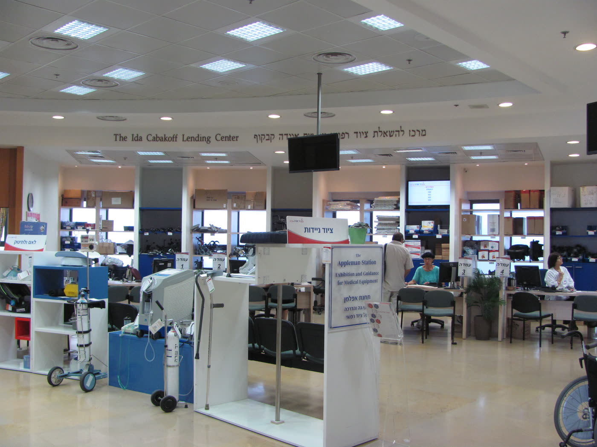
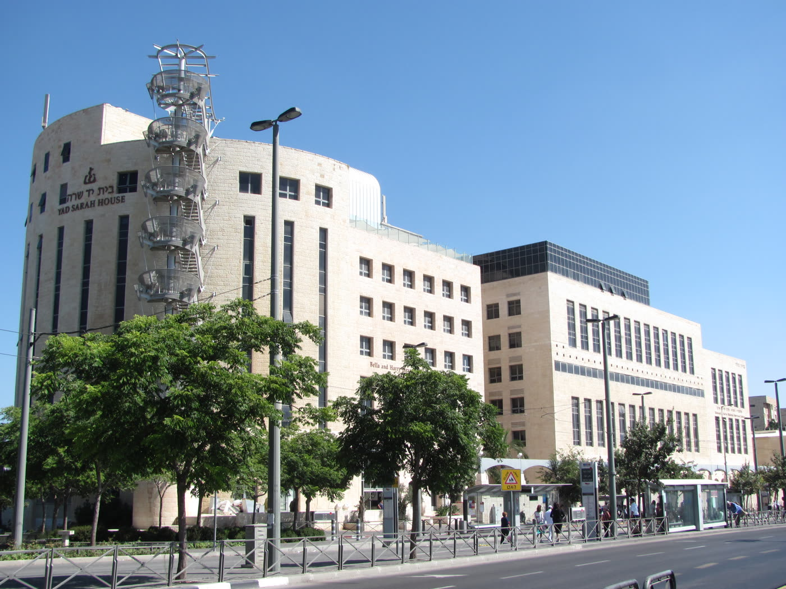
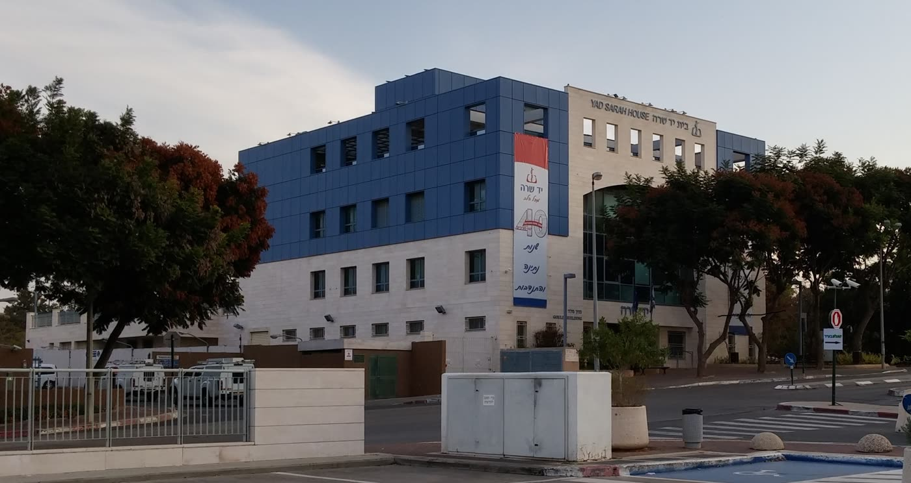
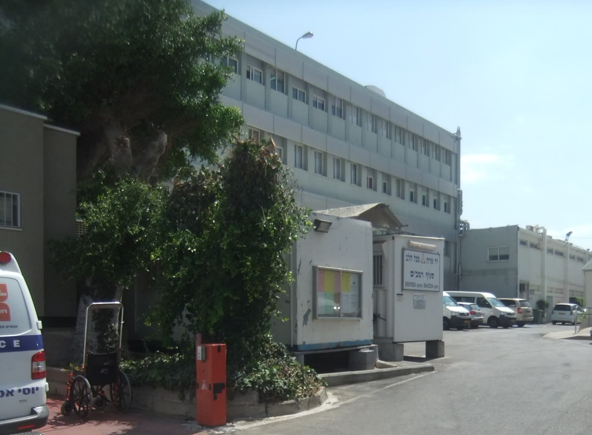
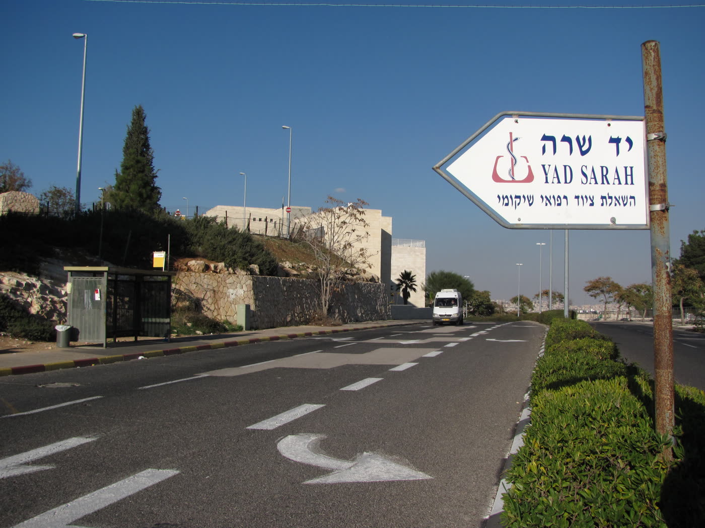

יד שרה · 5482 מילים · 6 תמונות · 1 סרטונים





← 4 (סעיף 7) ← 5 (סעיף 9) ← 6 (סיום). הערה גלויה לקורא, בתחתית גלריית התמונות: כל התמונות בדף זה הן בניינים, שלטים ודלפקים. בתצלום הראשון נראים אנשים ליד העמדות, אך הם ברקע ואינם מצולמים בעת קבלת ציוד. לא נמצא ברישיון חופשי אף תצלום מהעשורים הראשונים של הארגון, ואף תצלום של אדם המקבל ציוד או משתמש בו. --- ## סרטון ריאיון עם אורי לופוליאנסקי, ערוץ הידברות, 28.10.2021, 8:20 דקות שמונה דקות שבהן המייסד מספר איך זה התחיל: חורף ירושלמי, ילדה שמשתעלת, ורופא שאמר שאם יש בבית מכשיר אינהלציה אפשר להשאיר אותה — ואם אין, לוקחים אותה לבית חולים עכשיו. משם הוא ממשיך לשיחה עם אשתו על קניית שניים־שלו
yad-sarahטיוטה ממופתחת. כל משפט עובדתי נושא בסופו את מזהי הממצאים שממנו נולד.
משפט שאינו נושא עובדה חדשה מסומן [חיבור]. אין משפט יתום.
המספרים בסוגריים אינם חלק מהדף הפומבי — הם שכבת הבקרה.
עמותת יד שרה משאילה ציוד רפואי ושיקומי בפריסה ארצית, ולפי הדיווח שמסרה
לרשם העמותות לשנת 2024 פועלים בה 5,000 מתנדבים לצד 310 עובדים
בשכר. [מ-002, מ-010, מ-003]
העמותה נרשמה ב-1983, אבל ההשאלה עצמה התחילה שנים קודם לכן, באמצע שנות
השבעים, בביתם של זוג בירושלים. [מ-001, מ-060, מ-050, מ-079]
בריאיון משנת 2021 סיפר המייסד, אורי לופוליאנסקי, שבחורף הירושלמי הראשון
שלהם דפקו בדלתם כמעט מדי ערב ושאלו אם יש מכשיר אינהלציה, משום שהרופא אמר
שעם מכשיר אפשר להשאיר את הילד בבית ובלעדיו לוקחים אותו לבית חולים. [מ-081]
לדבריו באותו ריאיון, הוא הציע לאשתו לקנות מכסף כיס שניים־שלושה מכשירים,
"כמו שאנחנו משאילים חלב ולחם". [מ-082]
ב-2023 מנה הארגון 123 סניפים, שחלקם יושבים בתוך בתי חולים, ומחזורו
השנתי ב-2024 היה כ-142 מיליון שקל. [מ-016, מ-061, מ-004]
ב-1994 הוענק לארגון פרס ישראל על תרומה מיוחדת לחברה ולמדינה. [מ-020]
ביוני 2014 הרשיע בית המשפט המחוזי את מייסדו בשבע עבירות של לקיחת שוחד,
ובדצמבר 2015 דחה בית המשפט העליון את ערעורו על ההרשעה. [מ-094, מ-025]
שש מן השבע היו תרומות שנכנסו לעמותה, ולפי פסק הדין לא נטען שלקח
מהן לכיסו. [מ-094, מ-097]
על שלוש מהן קבע בית המשפט שנועדו למטרותיה הנעלות של יד שרה, ועל שלוש
אחרות — שלא נועדו להגשים את מטרותיה. [מ-095]
אורי לופוליאנסקי, יליד 1951, הוא לדבריו "במקורי חיפאי", ולירושלים הגיע
באמצע שנות השבעים. [מ-028, מ-081]
בריאיון לערוץ הידברות באוקטובר 2021 הוא תיאר את ההבדל בין שתי הערים:
חיפה צמודה לים ולחה, ואילו ירושלים היא "עיר שכמעט ואין בה לחות, או לחות
מועטת", "ולכן יש בעיות... הרבה בעיות נשימה". [מ-081]
לדבריו, החורף הראשון שלהם בעיר היה קשה. [מ-081]
באותו ריאיון הוא הסביר מה קורה בערב חורפי כזה: הילד מתחיל להשתעל,
ומופיע קרופ — יובש בסימפונות, שיכול להגיע "באופן די מיידי, חלילה,
לדלקת ריאות". [מ-081]
ואז, לפי עדותו, "כמעט כל ערב מישהו דפק" — ושאל אם יש בבית מכשיר
אינהלציה. [מ-081, מ-109]
הוא הסביר למה השאלה הזאת גדולה כל כך: הרופא אמר, לדבריו, שאם יש מכשיר
אפשר להשאיר את הילדה בבית, ואם אין — לוקחים אותה מיד לבית
חולים. [מ-081]
בפי המייסד תוארה גם סצנה חוזרת שבה עצר אמבולנס בפתח הבית, ובתוכו רופא
ותינוק, והרופא שאל אם יש כאן מישהו שיש לו מכשיר אינהלציה — ואם יש,
"נחזיר אותה הביתה, אבל אם לא, מיד לבית חולים". [מ-083]
זה אינו סיפור על מכשיר. זה ההפרש בין לילה בבית לבין אשפוז של
תינוק. [חיבור]
לפי אותו ריאיון, מכאן הגיעה ההצעה שממנה הכול נגזר. לופוליאנסקי סיפר:
"ואז דיברתי עם אשתי ואמרתי, אולי נקנה מכסף כיס, נקנה איזה שניים, שלושה,
כמו שאנחנו משאילים חלב ולחם ומלפפון, שיהיה מכשירי אינהלציה כדי לעזור
לאנשים." [מ-082]
שימו לב למה שהוא לא אמר. הוא לא אמר "נקים ארגון". הוא אמר
נשאיל — כמו שמשאילים חלב ולחם. [חיבור]
מאמר מקרה־בוחן על הפרשה, שפורסם ב-2020, מתאר את אותה נקודת פתיחה במילים
אחרות: "באמצע שנות השבעים הקים במשותף עם אשתו גמ"ח קטן להשאלת מכשירי
אדים לתינוקות וציוד רפואי נלווה". [מ-050]
שני התיאורים אינם אישוש עצמאי זה לזה. הפסקה הזאת במאמר אינה נושאת
הפניה למקור, אף שציטוטי גזר הדין באותו מאמר עצמו נושאים הערות שוליים עם
עמוד ותאריך. שניהם חוזרים, במישרין או בעקיפין, לגרסת המייסד. [מ-115]
**שם אשתו לא נמצא באף מקור שנבדק כאן, וגם לא בריאיון עם המייסד עצמו.
לכן הוא אינו כתוב כאן.** [מ-088]
בריאיון משנת 2021 סיפר לופוליאנסקי גם על אביו. לדבריו, אביו — סוחר שהגיע
אז לגיל שבעים — ישב אצלם בליל שבת, וראה תוך זמן קצר שני אנשים דופקים
בדלת: אחד ביקש בלון חמצן קטן, והשני, בתוך סעודת ליל שבת, ביקש מכשיר
אינהלציה. [מ-084]
לפי אותה עדות אמר לו אביו: "אני החלטתי שאני סוגר את העסקים, אני מוכר,
אם צריך, אז כל מה שאני מוכר, את הכסף אני אתן לך שתקנה את הציוד הרפואי
למי שצריך." [מ-084]
זו עדות יחידה של בן על אביו שנפטר, ולא נמצא לה מקור נוסף. היא נכתבת
כאן כדבריו של לופוליאנסקי, ולא כעובדה מאומתת. [מ-084]
ליד שרה יש שני תאריכי לידה, והם אינם שווים במשקלם. [חיבור]
השעון הרשמי: במרשם העמותות רשומה שנת הייסוד 1983, ואותה שנה מופיעה
גם בפורטל הזכויות "כל-זכות". זהו מסמך רשמי. [מ-001, מ-060]
השעון של המעשה: ההשאלה מהבית התחילה באמצע שנות השבעים. זו עדות
עצמית — הארגון והמייסד על עצמם — ולא מסמך. [מ-050, מ-115]
בפועל, הארגון עצמו סופר את עצמו מהשעון המוקדם, ולא באופן עקבי. בתיאור
של סרטון שהעלה הערוץ הרשמי בינואר 2020 נכתב "45 שנות התנדבות"; תיאור
הריאיון בערוץ הידברות ב-2021 כתב "44 שנה"; ושלט שנתלה על בניין הארגון
ברעננה, בתצלום מנובמבר 2016, הכריז "40 שנות נתינה
והתנדבות". [מ-075, מ-108, מ-092, מ-090]
בתוך ריאיון אחד — אותו ריאיון מ-2021 — נאמרו שתי ספירות סותרות: המייסד
אמר "לפני 46 שנה", ובמקום אחר באותה שיחה "לפני כ-45 שנה". [מ-081, מ-110]
שש ספירות עצמיות לפחות, ולפחות שלוש שנות פתיחה שונות. [חיבור]
**לכן שנה מדויקת לפני 1983 אינה נכתבת כאן. אמצע שנות ה-70 הוא כל מה
שהמקורות מרשים.** [מ-079]
את הצמיחה עצמה תיאר המייסד בשורה אחת: "וכך התחילה יד שרה. אז הוספנו עוד
משהו ועוד משהו." [מ-083]
מה שלא נמצא: מאין בא השם "יד שרה". חיפשנו, ולא נמצא הסבר מתועד באף
אחד מהמקורות שנבדקו — כולל בריאיון עם המייסד, שאינו מזכיר את השם
כלל. [מ-088]
הארגון מפעיל מעל מאה סניפים בפריסה ארצית, "מקריית שמונה ועד אילת",
וחלק מהם ממוקמים בתוך בתי חולים. [מ-061]
מספר הסניפים עלה לאורך השנים: 106 בכתבה מ-2014, ו-123 לפי מנהל באגף
בארגון שדיבר בוועדת המדע והטכנולוגיה של הכנסת ב-16 במאי 2023. [מ-032, מ-016]
לפי דיווח העמותה לרשם העמותות לשנת 2024, פועלים בארגון 5,000 מתנדבים
ו-310 עובדים בשכר. [מ-003]
**מקורות אחרים נקבו במספרי מתנדבים אחרים לאותן שנים בערך, ואף מקור אינו
מגדיר מה נספר. לכן כאן נכתב רק המספר בעל הדרגה הגבוהה ביותר, עם
השנה.** [מ-053]
על אגף הציוד הייחודי — האגף שמשאיל ציוד רפואי מתקדם ומותאם אישית —
כתב הארגון בעצמו: "שהציוד על פי רוב הוא ציוד יד שניה, המתקבל מתרומות
מלקוחות. לעיתים הפריט אנו נמצא במלאי שלנו וניתן לקבלו ע"פ הקדימות
בתור." [מ-069]
כלומר: הציוד חוזר, ויש תור. [חיבור]
המשפט הזה נוגע לאגף אחד ולא לכל הארגון. אותו עמוד עצמו קובע שהציוד
הייחודי "הינו בנוסף לציוד השוטף אשר נמצא בסניפי יד שרה", והוא זמין
בחמישה מרכזי שירות בלבד — ירושלים, חיפה, באר שבע, רעננה וראשון
לציון. [מ-102, מ-070]
לציוד השוטף שבסניפים לא נמצא מסמך מקביל שאומר מאין הוא מגיע. [מ-102]
הקטלוג רחב הרבה יותר מ"ציוד רפואי": אביזרי הליכה וניידות, מיטות ומזרונים,
ציוד נשימה, ציוד לכבדי ראייה, ציוד לילדים, כיסא בטיחות לרכב, מעלון
למדרגות ומשאבת חלב חשמלית. [מ-012]
באותו קטלוג יש גם קטגוריה אחת של פריטים שאינם מושאלים אלא נמכרים:
"ערכות למכירה". [מ-106]
ההשאלה גם אינה כל מה שהארגון עושה: לצדה פועלים מוקד מצוקה, מרפאת שיניים
לגיל הזהב, סיוע משפטי לקשיש, שירות הסעות למוגבלי תנועה ומסגרות לילדים
עם מוגבלות. [מ-062]
חלק מהשירותים האלה אינם ארציים ואינם חינם, וכך כתוב בעלון של הארגון
עצמו: הציוד לכבדי ראייה קיים "בסניף ראשון לציון בלבד"; במרפאת השיניים
"הטיפול כרוך בתשלום ההוצאות"; במרכז המשפחתי "הטיפול כרוך בתשלום סמלי";
ובבית המלאכה לתיקון ציוד פרטי "השירות ניתן תמורת תשלום, בהתאם להצעת
מחיר". [מ-106]
בישיבת ועדת המדע והטכנולוגיה במאי 2023 תיאר מנהל אגף בארגון גם חיישן
נפילה בחוץ עם ניטור מדדים ואיתור מיקום, ובוט בוואטסאפ שדרכו אפשר לבדוק
באיזה סניף יש כיסא גלגלים פנוי. [מ-017]
הוא עצמו הציג את שניהם ככיוון ולא כמצב גמור: "עכשיו התחלנו להפעיל...
לשם אנחנו הולכים", ועל הבוט — "אנחנו מנסים להתקדם לשם". זו אמירת הארגון
על עצמו בפני ועדה, לא נתון שנבדק. [מ-107]
בעלון של הארגון נכתב שהמכשירים "מושאלים חינם לכל פונה, תמורת
עירבון". [מ-072]
המשפט הזה נכון, וצריך לקרוא אותו עד סופו. [חיבור]
התנאי הכללי. בעמוד ההשאלה הכללי של הארגון — זה שחל, לפי לשונו,
"בכל סניפי יד שרה, מקרית שמונה ועד אילת" — כתוב תחת הכותרת
"חשוב שתדעו": "ההשאלה הינה ללא עלות – דמי פיקדון בלבד", ומיד אחריו:
"השאלת הציוד הינה לתקופה של חודש וניתנת להארכה על ל-3 חודשים. לתקופה
ארוכה יותר ניתן לפנות לסניף להסדר מתאים." [מ-100]
זהו סייג זמן, והוא חל על כל הציוד — לא רק על פריט כבד. [מ-100]
התנאי לפריט כבד. בעמוד ההשאלה של מנוף הרמה, כפי שנלכד בארכיון
האינטרנט בינואר 2026, מופיעים שלושה משפטים זה אחר זה:
"שרותי יד שרה ניתנים ללא עלות כלל. המנוף נמסר בהשאלה ויש להשאיר ערבון
בסך 500 ש"ח כדמי פיקדון. כמובן שניתן לתרום לאחר החזרת המנוף." [מ-064]
המקור מכנה את התשלום "דמי פיקדון" — ואינו אומר במפורש שהוא מוחזר.
מה שהוא כן אומר על מה שקורה אחרי ההחזרה הוא שאפשר לתרום. בכל מקרה,
500 שקל מזומן נדרשים מראש. [מ-101]
באותו עמוד מופיעים גם תשלומים שאינם מוחזרים: השתתפות חודשית של 64 שקל,
"המקנה ביטוח, אחריות וטיפול מונע"; משלוח ב-300 שקל לכל צד, ותוספת 150
שקל לכל פריט כבד נוסף; ורכישת ערסל מחודש ב-160 שקל. [מ-065, מ-066]
בעלון של הארגון נכתב במפורש שההובלה עד הבית היא "בתשלום". [מ-072]
יש גם תנאי סף שאינם כספיים: לקבלת המנוף נדרשת הדרכה של פיזיותרפיסט או
מרפא בעיסוק מהיחידה לטיפולי בית של קופת החולים, וציוד חמצן ניתן בהפניה
מקופת החולים. [מ-067, מ-073]
לציוד הרגיל לא נמצא מסמך שמתנה את ההשאלה במבחן הכנסה — ולא נמצא מסמך
שקובע שאין כזה. [מ-073]
מה שאפשר לומר: ההשאלה עצמה אינה גובה דמי שכירות, אך היא מותנית
ב"דמי פיקדון" — 500 שקל בפריט הכבד שנמצא — ומוגבלת בזמן: חודש, עם הארכה
עד שלושה חודשים. בפריטים כבדים נגבים דמי השתתפות והובלה שאינם
מוחזרים. [מ-068, מ-100, מ-064]
מה שאי אפשר לומר: "הכול בחינם", ולא "הערבון מוחזר" — אף מקור שנמצא
אינו אומר את זה. [מ-101]
ומה שלא נמצא: סכום הפיקדון לפריטים הבסיסיים — כיסא גלגלים, קביים,
הליכון. התנאי הכללי חל עליהם, אך המסמך היחיד שנוקב בסכום נוגע לפריט אחד
כבד. [מ-100, מ-068]
לפי דיווח העמותה לרשם העמותות, המחזור השנתי שלה ב-2024 עמד על
141,792,000 שקל. [מ-004]
הפילוח המלא מתחבר במדויק לסכום הזה, ומראה שלושה דברים. [מ-005]
האחד: כ-70% מהתקציב מגיע מתרומות — 39.7 מיליון מישראל, 27.6 מיליון
מחו"ל, ו-31.9 מיליון בשווי כספי. [מ-005]
השני: כמעט רבע מהתקציב אינו כסף כלל. 31.9 מיליון שקל, שהם 22.5%
מהמחזור, הם תרומות בשווי ולא במזומן — ציוד, שירותים ושעות. [מ-006]
מספר של 142 מיליון שקל בלי הסייג הזה מטעה. [חיבור]
השלישי: כסף ציבורי — הקצבות, תמיכות ושירותים מהמדינה ומרשויות
מקומיות — מסתכם ב-10.4 מיליון שקל, כ-7.4% מהתקציב. הארגון אינו ממומן
בעיקרו בידי המדינה. [מ-005]
שורה אחת בפילוח נשארה בלי הסבר. תחת הכותרת "שירותים כללי" רשומים
27,696,000 שקל — 19.5% מהמחזור. זהו שמה של השורה בדיווח, והמקור אינו
מפרט ממה היא מורכבת ואף לא ממי הגיע הכסף. **לא נמצא מסמך שאומר אם היא
כוללת דמי השתתפות, פיקדונות או דמי הובלה, ולכן אין כאן
תשובה.** [מ-005]
לעמותה יש אישור ניהול תקין בתוקף לשנת 2026 ואישור זיכוי ממס
לתרומות. [מ-008]
התשובה החזקה ביותר לשאלה הזאת לא הגיעה מהארגון אלא ממשרד
הבריאות. [חיבור]
בכתבה שפורסמה ב-TheMarker בדצמבר 2014 מסר המשרד את הנתונים האלה: תקציב
התמיכות הכולל שלו ירד מ-10.7 מיליון שקל ב-2013 ל-7.9 מיליון ב-2014,
ובתוך כך קוצץ תקציב התמיכות לתחום השאלת הציוד הרפואי מ-2.4 מיליון שקל
ל-400 אלף שקל בלבד. [מ-033]
מתוך אותם 400 אלף שקל קיבלה יד שרה 265 אלף — 67% מכלל ההקצאה הממשלתית
לתחום — ו-130 אלף השקלים הנותרים התחלקו בין שבע עמותות אחרות. [מ-033]
שני דברים עולים מכאן. האחד: בשנה ההיא, כל מה שמשרד הבריאות הקצה
בתקציב התמיכות שלו לתחום השאלת הציוד הרפואי היה כ-400 אלף
שקל. [מ-033]
זהו סעיף תמיכות אחד במשרד אחד, ולא סך התמיכה הציבורית
בתחום. [מ-103]
השני: יד שרה אינה לבד בתחום. באותה שנה התחלקו 130 אלף השקלים
הנותרים "בין 7 עמותות אחרות", בלשון המשרד — שבע שקיבלו תמיכה באותה שנה,
לא מפקד של התחום. [מ-033]
באותה כתבה עצמה מופיע מספר אחר. בגוף הידיעה נכתב שתמיכת המדינה
בעמותה "ירדה בהרבה — מ-1.5 מיליון שקל ב-2013, לפחות מ-300 אלף שקל בלבד
ב-2014". [מ-103]
זה אינו אותו חתך: הראשון הוא תמיכה בעמותה מכל המקורות, והשני הוא נתח
מסעיף תמיכות אחד. הכתבה אינה מיישבת ביניהם, וגם אנחנו לא. [מ-103]
הארגון עצמו מתאר את החוליה החסרה כך: "בן-אדם שהיום יוצא מבית החולים,
לרוב אנחנו לא יודעים שום דבר, אומרים לו: תלך ל'יד שרה', תיקח כיסא או
מיטת בי"ח." [מ-018]
זו אמירה של הארגון על עצמו, ולא נמצא לה אישור ממקור רשמי. [מ-018]
מה שכן מאושש הוא הפתרון הפיזי לאותה נקודה: חלק מהסניפים ממוקמים בתוך
בתי החולים. [מ-061]
הארגון גם נקרא אל השולחן. ב-16 במאי 2023 הוזמנו שני מנהלים מיד שרה —
מנהל אגף "יד שרה מסייעת" ומנהל אגף הלוגיסטיקה — לישיבת ועדת המדע
והטכנולוגיה של הכנסת בנושא "טכנולוגיות וכלים דיגיטליים לסיוע ושיפור
איכות החיים של בני הגיל השלישי". [מ-015, מ-107]
זו הזמנה רחבה ולא במה שמורה: ברשימת המוזמנים כשלושים שמות, ובהם
משרדי ממשלה, קופות חולים, עמותות זקן ונגישות — וגם כחמישה־עשר מנכ"לים
וסמנכ"לים של חברות טכנולוגיה פרטיות. [מ-107]
כמה בני אדם נעזרים בשנה — לזה לא נמצאה תשובה מתועדת. בריאיון משנת
2021 אמר לופוליאנסקי כי 120 סניפים "נותנים סיוע לשלושת רבעי מיליון איש
בכל שנה ושנה". [מ-085]
זו אמירה בעל פה של מייסד הארגון על הארגון שהקים, ואין לה מקור
חיצוני. [מ-085]
המספר הכמותי היחיד שנמצא ממקור שאינו הארגון עצמו הוא ישן: לפי כתבת
TheMarker מ-2014, ב-2003 השאילה העמותה כ-170 אלף פריטים רפואיים, ועד
2014 עלה המספר ליותר מ-300 אלף. [מ-030]
הכתבה מייחסת אותם ל"נתונים שהגיעו לידי TheMarker" — היא אינה אומרת מי
מסר אותם, ולכן גם לא ניתן לקבוע כאן שהעמותה מסרה
אותם. [מ-103]
נתון עדכני יותר לא נמצא. [מ-030]
בשנת תשנ"ד, 1994, הוענק פרס ישראל בתחום "תרומה מיוחדת לחברה ולמדינה"
לארגון "יד שרה". [מ-020]
כך רשום ברשימת מקבלי הפרס באתר פרס ישראל של משרד החינוך, הגוף
המעניק. [מ-020]
בטבלת אותה שנה מופיע השם "יד שרה" במרכאות, ולא שם של אדם. באותו תחום
ובאותה שנה מופיע גם "נגה הראובני וצוות נאות קדומים" — כלומר גם מקבל
שאינו יחיד. [מ-020, מ-104]
לפי הגוף המעניק, הפרס ניתן לארגון. [מ-020]
וכאן יש סתירה שיש להציג. שני מקורות מייחסים את הפרס ללופוליאנסקי
עצמו: פסק הדין של בית המשפט העליון מונה בשיקולי הענישה את "זכייתו בפרס
ישראל בשל הקמת העמותה", ומאמר המקרה מ-2020 כותב "פרס ישראל שהוענק
ללופוליאנסקי בשנת 1994 עבור תרומה מיוחדת לחברה
והמדינה". [מ-105]
במחלוקת הזאת המקור המכריע הוא אתר הגוף המעניק, שבו רשום שם הארגון.
פסק דין ומאמר מחקר אינם רשומת הפרס. [מ-020]
נימוקי ועדת הפרס לא נמצאו. [מ-021]
אורי לופוליאנסקי כיהן כסגן ראש עיריית ירושלים, ובשנים 2003–2008 כראש
העיר. [מ-059]
מה שנקבע. ביוני 2014 הרשיע אותו בית המשפט המחוזי בירושלים בשבע
עבירות של לקיחת שוחד, וגזר עליו שש שנות מאסר בפועל, מאסר על תנאי וקנס
בסך 500,000 שקל. [מ-094]
ב-29 בדצמבר 2015 דחה בית המשפט העליון את ערעורו על ההרשעה. [מ-025]
מאישום נוסף — קבלת כספים מעד המדינה לתשלום לפעילים לקראת בחירות
מוניציפליות — הוא זוכה. [מ-096]
שבע התרומות. פסק הדין מונה אותן אחת לאחת: 1,250,000 שקל מצ'רני ליד
שרה בשנת 2000; 785,000 שקל מעד המדינה בשנים 2000–2003 עבור בניית בית
כנסת בבית יד שרה בירושלים; 77,057 שקל — ארון קודש לאותו בית כנסת ביוני
2000; 84,300 שקל — ריהוט לבית הכנסת ב-2001; 88,000 שקל שנתרמו במסגרת
אירוע הוקרה לתורמי יד שרה בבית שגריר בריטניה ב-2003–2004; 255,000 שקל
לרכישת כיסאות גלגלים ב-2006; והשביעית, 40,000 שקל (מהם נפרעו 30,000),
נתרמה לישיבה שבראשה עמד בנו של לופוליאנסקי, באפריל–ספטמבר
[מ-094]שש מהן נכנסו לעמותה; השביעית לא. [חיבור]
מה שהעליון כתב על הכסף. בפתח פסק הדין, כשהוא מתאר את התרומות שהתקבלו
ביד שרה, מוסיף בית המשפט העליון בסוגריים: "שלא נטען כי לופוליאנסקי נטל
מהן לכיסו". [מ-097]
זו אמירה של בית המשפט עצמו, ולא של פרשן. [חיבור]
ובכל זאת — לא כל שש התרומות הן אותו דבר. לצורך קביעת מתחם הענישה
חילק בית המשפט המחוזי את המעשים לשלושה אירועים. [מ-095]
באירוע הראשון נכללו שלוש עבירות — 1.25 מיליון מצ'רני, 88 אלף מאירוע בית
השגריר, ו-255 אלף לרכישת כיסאות גלגלים — ועליהן קבע בית המשפט **"כי
תרומות אלו נועדו למטרות הנעלות של יד שרה"**, והעמיד את המתחם על 5 עד 7
שנות מאסר. [מ-095]
האירוע השני היה התרומה לישיבת הבן, ומתחמו שנה עד שלוש שנים. [מ-095]
באירוע השלישי נכללו שלוש עבירות השוחד שהקימו התרומות לבית הכנסת, ולגביו
צוין "כי מדובר בתרומות שלא נועדו להגשים את מטרות יד שרה" — והמתחם
הועמד על 4 עד 7 שנות מאסר. [מ-095]
כלומר: לפי בית המשפט, שלוש מן התרומות שנכנסו לעמותה שירתו את מטרותיה,
ושלוש — בניית בית כנסת בבניין, ארון קודש וריהוט — לא. [חיבור]
מה שהמחוזי סבר, ומה שהעליון הוסיף. בבואו לשקול את נסיבותיו האישיות
של לופוליאנסקי — ובכללן "תרומתו לחברה (על דרך הקמת יד שרה)" לפי סעיף
40יא(7) לחוק העונשין — כתב השופט פוגלמן שבית המשפט המחוזי "הביא בחשבון
את סגולותיו הרבות של ארגון יד שרה, אך סבר שקבלת התרומות ביד שרה
הועילה ללופוליאנסקי במישור האישי, בכך שתרמה לטיפוח תדמיתו ולהעלאת קרנו
(גזר הדין בעניינו של לופוליאנסקי, עמ' 2; עמ' 4–5) ואף העצימה את כוחו
והשפעתו". [מ-027, מ-098]
זו עמדת המחוזי, שהעליון מדווח עליה. [חיבור]
עמדתו של פוגלמן עצמו נכתבה במשפט שאחריו: "כשלעצמי, מוכן אני להניח...
כי לופוליאנסקי ביקש גם לסייע לעמותת יד שרה ולהעניק עוד משירותיה הטובים
באמצעות כספי התרומות. גם בכך יש כדי להפחית, הפחתת מה, מחומרת
האשם". [מ-027]
העונש. בית המשפט העליון העמיד את עונש המאסר על שישה חודשים שירוצו
בעבודות שירות, בעוד הקנס בסך חצי מיליון שקל נותר על כנו. [מ-025, מ-057]
ההקלה ניתנה משום שחוות דעת רפואית קבעה ששהייה במאסר תביא "להרעת מצבו
הרפואי ולקיצור תוחלת חייו" — ולא בשל ספק באשמה. [מ-026]
בהמשך פסק הדין מכנה בית המשפט העליון את יד שרה "מפעל חייו" של
לופוליאנסקי. [מ-026]
מה שלא נמצא: לא נמצא בפסק הדין שהעמותה עצמה נחקרה, הואשמה או נקבעה
לגביה אחריות כלשהי. אין לקרוא בכך לא זיכוי ולא הרשעה של
העמותה. [מ-029]
נכון להיום יש לעמותה אישור ניהול תקין בתוקף. [מ-008]
בגזר הדין שנתן בית המשפט המחוזי בירושלים ביוני 2014 כתב השופט דוד רוזן
על לופוליאנסקי משפט אחד:
"הנאשם לא מצא להבדיל בינו לבין עמותת 'יד שרה'." [מ-055]
באותו גזר דין כתב רוזן גם שהנאשם "ביצע את העבירות לטובת ארגון 'יד שרה',
ארגון שמטרותיו נעלות, ולא מעט קדושות" — ומיד המשיך: "עם זאת...
התרמתו את יזמי פרויקט הולילנד לטובת הארגון העצימה כוחו והשפעתו. הנאשם
כמזוהה עם ארגון יקר וחשוב זה אינו דומה לנאשם ללא חיבורו לארגון 'יד
שרה'." [מ-055, מ-099]
המשפט הראשון אינו הקלה. הוא החצי הראשון של קביעה שההמשך שלה
מחמיר. [חיבור]
הארגון המשיך לעבוד. [חיבור]
באגף הציוד הייחודי, כותב הארגון, הציוד יוצא וחוזר, "על פי רוב... ציוד יד
שניה, המתקבל מתרומות מלקוחות". [מ-069]
הדפיקה בדלת שממנה זה התחיל היא היום מעל מאה סניפים, חלקם בשערי בתי
החולים. [מ-061]
1 · ראש הדף
אולם ההשאלה בבית יד שרה בירושלים, 2016. ארבע עמדות ממוספרות ("עמדה 1"
עד "עמדה 4"), שילוט "ציוד ניידות", ובקדמת האולם שני בלוני חמצן על
כַּנֵּי גלגלים, קב יד עם תווית תלויה, וגלגל של כיסא גלגלים בשולי
הפריים — מה שהיה פעם השאלה של מכשיר אינהלציה לשכן.
צילום: Yoninah, ויקישיתוף, CC BY-SA 4.0
2 · בסעיף 3
בית יד שרה בירושלים, 2016.
צילום: Yoninah, ויקישיתוף, CC BY-SA 4.0
3 · בסעיף 3
בית יד שרה ברעננה, נובמבר 2016. על פינת הבניין תלוי שלט של הארגון:
"40 שנות נתינה והתנדבות", וכיתוב "107 סניפים" משולב בתוך הספרה 0 של
"40". הארגון סופר את עצמו מאמצע שנות ה-70 — עשור לפני שנרשם רשמית
כעמותה ב-1983.
צילום: דוד שי, ויקישיתוף, CC BY-SA 4.0
4 · בסעיף 7
סניף יד שרה במתחם בית החולים רמב"ם בחיפה, 2013 — מבנה יביל בשולי
הכביש, ועל חזיתו שלט "יד שרה · מכל הלב / סניף רמב"ם". בקצה השמאלי של
הפריים, על המדרכה ליד אמבולנס חונה, עומד כיסא גלגלים פתוח.
צילום: יעקב, ויקישיתוף, CC BY-SA 3.0
5 · בסעיף 9
אורי לופוליאנסקי, נובמבר 2003. התצלום נעשה בביקור רשמי בעיריית טורונטו,
ובארכיון העיר הוא רשום כראש עיריית ירושלים.
צילום: Jose San Juan / ארכיון עיריית טורונטו
6 · בסיום
שלט הפניה לסניף יד שרה, 2010. מתחת לשם כתוב מה שהמקום עושה:
"השאלת ציוד רפואי שיקומי".
צילום: Yoninah, ויקישיתוף, CC BY-SA 3.0
סדר התמונות בדף: 1 (ראש) ← 2 ← 3 (סעיף 3) ← 4 (סעיף 7) ← 5 (סעיף 9)
← 6 (סיום).
הערה גלויה לקורא, בתחתית גלריית התמונות:
כל התמונות בדף זה הן בניינים, שלטים ודלפקים. בתצלום הראשון נראים אנשים
ליד העמדות, אך הם ברקע ואינם מצולמים בעת קבלת ציוד. לא נמצא ברישיון
חופשי אף תצלום מהעשורים הראשונים של הארגון, ואף תצלום של אדם המקבל
ציוד או משתמש בו.
ריאיון עם אורי לופוליאנסקי, ערוץ הידברות, 28.10.2021, 8:20 דקות
https://www.youtube.com/watch?v=ScWYJNWxLHM
שמונה דקות שבהן המייסד מספר איך זה התחיל: חורף ירושלמי, ילדה שמשתעלת,
ורופא שאמר שאם יש בבית מכשיר אינהלציה אפשר להשאיר אותה — ואם אין,
לוקחים אותה לבית חולים עכשיו. משם הוא ממשיך לשיחה עם אשתו על קניית
שניים־שלושה מכשירים מכסף כיס, ולערב שבת שבו אביו, סוחר בן שבעים,
ראה שתי דפיקות בדלת בתוך כחצי שעה — אחת לבלון חמצן קטן, אחת למכשיר
אינהלציה. לפי הריאיון אמר לו אז אביו: "אני החלטתי שאני סוגר את העסקים,
אני מוכר, אם צריך... אני אתן לך שתקנה את הציוד הרפואי למי שצריך."
זו אמירת כוונה בסרטון; מה קרה בפועל לעסקים אינו נאמר בו. הריאיון
הוא עדותו של המייסד על עצמו ועל ארגונו, והוא נשמע ככזה.
כל עובדה בדף הזה נשענת על אחד המקורות שלהלן, בציטוט ישיר.
1 · מרשם העמותות — גיידסטאר, אתר התאגידים של משרד המשפטים
עמותת יד שרה, מספר 580030104.
https://www.guidestar.org.il/organization/580030104
"סוג ארגון: עמותה · סטטוס: עמותה רשומה · מספר ארגון: 580030104 ·
שנת ייסוד: 1983"
"מספר עובדים: 310 (2024) · מספר חברים: 12 (2024) · מספר מתנדבים: 5,000 (2024)"
"מחזור שנתי: 141,792,000 ₪ (2024)"
"תרומות מישראל 39,662,000 · תרומות בשווי כספי 31,949,000 · שירותים כללי
27,696,000 · תרומות מחו"ל 27,601,000 · הקצבות ותמיכות מהמדינה 8,204,000…"
"ניהול תקין (2026) · זיכוי ממס לתרומות"
ארכיון: https://web.archive.org/web/20260822005752/https://www.guidestar.org.il/organization/580030104
**האחוזים בסעיף 6 (70%, 22.5%, 7.4%, 19.5%) הם חישוב שלנו מתוך המספרים
האלה, לא ציטוט.**
2 · אתר פרס ישראל, משרד החינוך — הגוף המעניק
מקבלי פרס ישראל תשנ"ג–תשנ"ט.
https://israel-prize.education.gov.il/israel-prize-recipients/tashnat-tashnag/
"שם 'יד שרה' | תחום תרומה מיוחדת לחברה ולמדינה"
"שם נגה הראובני וצוות נאות קדומים | תחום תרומה מיוחדת לחברה ולמדינה"
הערה: שני מקורות אחרים ייחסו את הפרס לאורי לופוליאנסקי אישית — פסק
הדין של בית המשפט העליון ("זכייתו בפרס ישראל בשל הקמת העמותה") ומסמך
מעוז 2020 ("פרס ישראל שהוענק ללופוליאנסקי בשנת 1994"). אתר הגוף המעניק
מייחס אותו לארגון, ולכן כך נכתב כאן, והסתירה מוצגת בגוף הדף.
3 · בית המשפט העליון — ע"פ 4456/14 ואח', פרשת הולילנד, 29.12.2015
"לופוליאנסקי… הואשם בכך שקיבל תרומות לעמותת 'יד שרה' מצד צ'רני ומצד
עד המדינה"
"מתן שוחד ללופוליאנסקי בדרך של מתן תרומות לארגון 'יד שרה' בסך כולל
של 1,250,000 ש"ח בשנת 2000"
"יש להקל בעונשו של לופוליאנסקי כך שעונש המאסר בפועל יועמד על 6 חודשים
שירוצו בדרך של עבודות שירות… רכיב הקנס יעמוד בעינו"
"חרף הזכויות הרבות שצבר לופוליאנסקי בהקמת יד שרה שהייתה למפעל חייו"
"בית המשפט המחוזי הביא בחשבון את סגולותיו הרבות של ארגון יד שרה, אך
סבר שקבלת התרומות ביד שרה הועילה ללופוליאנסקי במישור האישי, בכך שתרמה
לטיפוח תדמיתו ולהעלאת קרנו (גזר הדין בעניינו של לופוליאנסקי, עמ' 2;
עמ' 4–5) ואף העצימה את כוחו והשפעתו. כשלעצמי, מוכן אני להניח – כפי
שציינתי קודם לכן – כי לופוליאנסקי ביקש גם לסייע לעמותת יד שרה ולהעניק
עוד משירותיה הטובים באמצעות כספי התרומות. גם בכך יש כדי להפחית, הפחתת
מה, מחומרת האשם."
"בגין קבלת התרומות האמורות ביד שרה (שלא נטען כי לופוליאנסקי נטל מהן
לכיסו)… הרשיע בית המשפט המחוזי את לופוליאנסקי ב-7 עבירות של לקיחת
שוחד, וגזר עליו עונש של 6 שנות מאסר בפועל; מאסר על תנאי; וקנס בסך של
500,000 ש"ח."
"יצויין כי לופוליאנסקי זוכה מאישום נוסף שייחס לו לקיחת שוחד בגין קבלת
כספים מעד המדינה לטובת תשלום לפעילים לקראת בחירות מוניציפאליות."
"תרומה אחת, בסך 1.25 מיליון ש"ח, נתרמה מצ'רני ליד שרה במהלך שנת 2000…
תרומה שנייה, בסך כולל של 785,000 ש"ח, נתרמה מעד המדינה בתשלומים בשנים
2003-2000 עבור בניית בית כנסת בבית יד שרה בירושלים… תרומה שלישית,
בשווי של 77,057 ש"ח… רכישת ארון קודש לבית הכנסת בחודש יוני 2000;
תרומה רביעית, בסך 84,300 ש"ח… רכישת ריהוט לבית הכנסת בשנת 2001;
תרומה חמישית, בסך 88,000 ש"ח… במסגרת אירוע הוקרה לתורמי יד שרה בבית
שגריר בריטניה… 2004-2003; תרומה שישית, בסך 255,000 ש"ח… רכישה של
כסאות גלגלים בשנת 2006; ותרומה שביעית ואחרונה, בסך 40,000 ש"ח (שמתוכה
נפרע סך של 30,000 ש"ח), נתרמה מעד המדינה לישיבה שבראשה עמד בנו של
לופוליאנסקי בחודשים אפריל עד ספטמבר 2007."
"באירוע הראשון כלל בית המשפט שלוש מעבירות קבלת השוחד דרך תרומות ליד
שרה… בית המשפט מצא כי תרומות אלו נועדו למטרות הנעלות של יד שרה והעמיד
את מתחם הענישה על 5 עד 7 שנות מאסר בפועל. האירוע השני הוא התרומה
לישיבה בניהול בנו של לופוליאנסקי… במסגרת האירוע השלישי כלל בית המשפט
את שלוש עבירות קבלת השוחד שהקימו תרומות שהעביר עד המדינה ליד שרה עבור
בית הכנסת. ביחס לאירוע זה צוין כי מדובר בתרומות שלא נועדו להגשים את
מטרות יד שרה ומתחם הענישה הועמד על 4 עד 7 שנות מאסר בפועל."
*הטקסט המלא הופק מקובץ ה-PDF של פסק הדין ונשמר אצלנו.
מומלץ להצליב מול supremedecisions.court.gov.il.*
4 · גזר הדין, ת"פ 19201-91-12, השופט דוד רוזן, 19.6.2014
מצוטט דרך מסמך "בין הולילנד ל'יד שרה'" (מעוז, 2020), שמפנה לעמודי המקור
בהערות שוליים. ציטוטי גזר הדין עצמו הם אלה:
"הנאשם לא מצא להבדיל בינו לבין עמותת 'יד שרה'. העצמת העמותה ופעילותה
הייתה עבורו משאת חיים, העמותה, לדידו, הינה בבחינת נשמת אפו."
"עמותה שהיא בסיס קיומו ומקור כוחו והשפעתו"
"הנאשם ביצע את העבירות לטובת ארגון 'יד שרה', ארגון שמטרותיו נעלות,
ולא מעט קדושות. עם זאת… התרמתו את יזמי פרויקט הולילנד לטובת הארגון
העצימה כוחו והשפעתו. הנאשם כמזוהה עם ארגון יקר וחשוב זה אינו דומה
לנאשם ללא חיבורו לארגון 'יד שרה'."
ואלה אינם גזר הדין אלא לשונו של כותב המסמך מ-2020:
"לא הייתה מחלוקת בנוגע לכך שלופוליאנסקי לא קיבל או לקח אגורה שחוקה
לכיסו במהלך כל אותן שנים"
"באמצע שנות השבעים הקים במשותף עם אשתו גמ"ח קטן להשאלת מכשירי אדים
לתינוקות וציוד רפואי נלווה"
הערה: שתי הפסקאות האחרונות אינן נושאות הפניה למקור במסמך עצמו, אף
שציטוטי גזר הדין באותו מסמך כן נושאים. לכן הן מובאות כאן כדברי הכותב.
הקביעה שלופוליאנסקי לא נטל כסף לכיסו נשענת בדף הזה על פסק הדין של
בית המשפט העליון (מקור 3), לא על המסמך הזה.
5 · TheMarker · רוני לינדר, 23.12.2014
"מספר הפניות ל'יד שרה' זינק — התמיכה הממשלתית קוצצה ב-80%".
[משרד הבריאות] "קוצץ גם תקציב התמיכות לתחום השאלת הציוד הרפואי מ-2.4
מיליון שקל ל-400 אלף בלבד… קיבלה יד שרה תמיכה של 265 אלף שקל, דהיינו
67% מההקצאה לתחום השאלת הציוד הרפואי, ו-130 אלף שקל הנותרים מתחלקים
בין 7 עמותות אחרות."
"נתונים שהגיעו לידי TheMarker מראים כי העמותה… הגדילה במידה רבה את
פעילותה"
"ב-2003 השאילה העמותה כ-170 אלף פריטים רפואיים לחולים, ועד 2014 זינק
מספר ההשאלות ליותר מ-300 אלף."
"תמיכת המדינה בעמותה… ירדה בהרבה - מ-1.5 מיליון שקל ב-2013, לפחות
מ-300 אלף שקל בלבד ב-2014."
"יד שרה מפעילה 106 סניפים… ועובדים בה כ-6,000 מתנדבים."
הערה: הכתבה אינה אומרת מי מסר לה את נתוני הפעילות, אלא רק שהם
"הגיעו לידי TheMarker". שני מספרי התמיכה שבה — 265 אלף מסעיף התמיכות
של משרד הבריאות, ו"פחות מ-300 אלף" תמיכת מדינה — אינם מיושבים בכתבה.
6 · פרוטוקול ועדת המדע והטכנולוגיה, הכנסת ה-25, 16.5.2023
"יצחק במברגר - מנהל אגף יד שרה מסייעת, יד שרה"
"אני חושב שכולנו מכירים את 123 הסניפים שנמצאים בכל הארץ ובכל המגזרים"
"בן-אדם שהיום יוצא מבית החולים, לרוב אנחנו לא יודעים שום דבר, אומרים
לו: תלך ל'יד שרה', תיקח כיסא או מיטת בי"ח"
*הפרוטוקול הוא מקור רשמי למה שנאמר בישיבה. הדוברים מיד שרה מדברים על
הארגון שלהם.*
7 · כל-זכות · ערך "יד שרה"
https://www.kolzchut.org.il/he/יד_שרה
"שנת הקמה: 1983"
"הארגון מפעיל מעל ל-100 סניפים בפריסה ארצית, מקריית שמונה ועד אילת.
חלק מהסניפים נמצאים בתוך בתי החולים לנוחות המאושפזים בהם."
**8 · יד שרה — עמוד "השאלת ציוד רפואי" (עמוד ההשאלה הכללי) באתר הארגון,
כפי שנלכד בארכיון האינטרנט ב-24.5.2024**
http://web.archive.org/web/20240524063722/https://yad-sarah.net/posts/lending-medical-equipment/
"השירות מופעל ע"י מתנדבים וניתן בכל סניפי יד שרה, מקרית שמונה ועד
אילת."
[תחת "חשוב שתדעו"] "ההשאלה הינה ללא עלות – דמי פיקדון בלבד"
"השאלת הציוד הינה לתקופה של חודש וניתנת להארכה על ל-3 חודשים. לתקופה
ארוכה יותר ניתן לפנות לסניף להסדר מתאים."
*זהו התנאי הכללי, החל לפי לשונו על כל הסניפים. הוא אינו נוקב בסכום
פיקדון, ואינו אומר שהפיקדון מוחזר.*
**9 · יד שרה — עמוד "מנוף הרמה" באתר הארגון, כפי שנלכד בארכיון האינטרנט
ב-6.1.2026**
http://web.archive.org/web/20260106082954/https://yad-sarah.net/home_hospital/%D7%9E%D7%A0%D7%95%D7%A3-%D7%94%D7%A8%D7%9E%D7%94/
"שרותי יד שרה ניתנים ללא עלות כלל. המנוף נמסר בהשאלה ויש להשאיר ערבון
בסך 500 ש"ח כדמי פיקדון."
"נדרשת השתתפות סמלית של 64₪ לחודש המקנה ביטוח, אחריות וטיפול מונע."
"עלות משלוח לכל צד, הינו 300 ש"ח בלבד. לכל פריט כבד נוסף, יש להוסיף
150 ש"ח."
"חובה לקבל הדרכה פיזיותרפיסט או ממרפא בעיסוק"
*בעת העבודה על הדף היה אתר הארגון סגור לשבת והציג "שבת שלום". זו סגירה
יזומה של הארגון ולא חסימה; הארכיון שימש כדי שלא להמתין.*
10 · יד שרה — "השאלת ציוד ייחודי", ארכיון 17.6.2024, ועלון "שירותי יד שרה"
"שהציוד על פי רוב הוא ציוד יד שניה, המתקבל מתרומות מלקוחות… וניתן
לקבלו ע"פ הקדימות בתור"
"במרכזי השירות של יד שרה בירושלים, יד שרה חיפה, יד שרה באר שבע,
יד שרה רעננה ויד שרה ראשון לציון."
"מושאלים חינם לכל פונה, תמורת עירבון"
"כולל הובלה עד הבית (בתשלום)"
"ציוד חמצן (בהפניה מקופת החולים)"
11 · ריאיון עם אורי לופוליאנסקי, ערוץ הידברות, 28.10.2021
https://www.youtube.com/watch?v=ScWYJNWxLHM
"כשאנחנו באנו לירושלים, זה היה חורף קשה, לפני 46 שנה"
"כמעט כל ערב מישהו דפק מהר, אם יש אינהלציה, כי הרופא אמר, אם יש
אינהלציה, אז אפשר להשאיר אותה בבית, אם לא, מיד לקחת אותה לבית חולים."
"ואז דיברתי עם אשתי ואמרתי, אולי נקנה מכסף כיס, נקנה איזה שניים,
שלושה, כמו שאנחנו משאילים חלב ולחם ומלפפון"
"וכך התחילה יד שרה. אז הוספנו עוד משהו ועוד משהו."
"אני החלטתי שאני סוגר את העסקים, אני מוכר… את הכסף אני אתן לך שתקנה
את הציוד הרפואי למי שצריך."
"120 סניפים נותנים סיוע לשלושת רבעי מיליון איש בכל שנה ושנה"
"לפני כ-45 שנה"
**"יש אינהלציה?" הוא שמו של הסרטון בערוץ, ולא ציטוט של הדובר. בגוף
הריאיון הוא מספר על השאלה בעקיפין.**
**לסרטון אין כתוביות. הוא תומלל אצלנו במכונה, 114 מקטעים, 1,079 מילים,
והתמליל נשמר. התמלול שיבש שמות (למשל "יד צרה" במקום "יד שרה"), ולכן
המספרים מתוכו מובאים כאמירה של הדובר ולא כנתון.**
12 · שלט על בניין יד שרה ברעננה, בתצלום מ-19.11.2016
https://commons.wikimedia.org/wiki/File:Yad_Sarah_Raanana_1.jpg
הטקסט על השלט נקרא מתוך התצלום עצמו בהגדלה: "יד שרה · מכל הלב · 40 שנות
נתינה והתנדבות". הכיתוב "107 סניפים" משולב בתוך הספרה 0 של "40", ואינו
שורה נפרדת לצדה.
13 · תיאורי סרטונים ביוטיוב — ספירות עצמיות של הארגון
PXA3D4dX7Wk מ-16.1.2020: בתיאור הסרטון"45 שנות התנדבות".
**שני התיאורים נקראו בזמן המחקר ולא נשמר להם צילום ארכיון. ניסיון לאמת
מחדש את תיאור הסרטון של הערוץ הרשמי נכשל: הכלי שבידינו החזיר בקשת אימות
של יוטיוב ולא את המסמך. לכן שתי הספירות האלה מובאות כפי שנקראו, בלי
עוגן שאפשר להצליב אליו היום. זהו פער פתוח.**
המייסד. [מ-088]
אומת. [מ-050, מ-082]
משנת 2021. [מ-085]
[מ-030][מ-005] עם הארכה — נמצא וחל על כל הסניפים. סכום נמצא רק לפריט כבד
אחד. [מ-100, מ-068]
[מ-021] לאגף אחד. [מ-102]
מה קרה בפועל לא נמצא. [מ-083]
לא הועלה דבר לאתר החי.
yad-sarahבודק: office:slim-checker · 22.8.2026
נבדק: deeds/yad-sarah/page.md (508 שורות) מול המקורות החיים/השמורים.
דף המידע (journal.md) שימש כמפת דרכים בלבד — כל בדיקה נעשתה מול המקור עצמו.
"ממכשיר אינהלציה לשכן ועד רשת ארצית של 5,000 מתנדבים המשאילים ציוד רפואי"
לפני שקראתי מילה נוספת, זה מה שהבנתי: מישהו השאיל פעם מכשיר אחד לשכן,
ומזה צמח ארגון שבו 5,000 מתנדבים משאילים ציוד רפואי בכל הארץ. הבנתי
שהמספר 5,000 הוא עובדה על ההווה — כמה מתנדבים יש שם, נכון עכשיו.
הבנתי שהסיפור הוא סיפור צמיחה, ושהוא נגמר טוב.
שתי הערות על ההבנה הזאת, כממצא ולא כטעם:
(§4) אותו מספר מיוחס נכון ("לפי דיווח העמותה לרשם העמותות לשנת
2024") ומלווה בהודאה שמקורות אחרים נוקבים במספרים אחרים. הכותרת היא
החלק הנקרא ביותר, והיא זו שאינה נושאת את הסייג.
זו אינה בהכרח בעיה — אבל היא כן אומרת שהכותרת ממסגרת דף אחר מזה
שקראתי.
נכתבו תוך כדי קריאה ראשונה, לפני שפתחתי מקור אחד.
מתנדבים או מקום עבודה? מה עושים 310 השכירים ומה עושים המתנדבים?
הדף לא חוזר לזה אף פעם.
חשבתי שהוא דן בערעורים. (השאלה עצמה היא הממצא — ראו 1 בחלק ג'.)
היה 400 אלף שקל". חיברתי בראש והמספרים לא הסתדרו לי. ב-§6 כתוב
שהמדינה נותנת 10.4 מיליון. אז המדינה נותנת 400 אלף או 10.4 מיליון?
שני מספרים סמוכים שסופרים דברים שונים, והדף לא אומר שהם שונים.
במרשם רשמי והשני נאמר בריאיון, באיזה מובן הם שווים במשקל?
שבקטלוג? זה נשמע כמו טענה גדולה מאוד על ארגון של 142 מיליון שקל.
צריך מחר כיסא גלגלים, כמה זה יעלה לי ולכמה זמן אני מקבל אותו.** הדף
אומר לי במפורש שהוא לא יודע. זו התשובה הכי חשובה בדף והיא חסרה.
הסעיף, והוא היחיד בסעיף שלא מגובה בציטוט.
שאדגיש את זה? מי טען אחרת?
על מה בדיוק הורשע? הדף מסביר את זה רק חלקית, ומצטט משפט אחד עם
סכום אחד. הרגשתי שמשהו בסיפור מוחזק ממני.
באמת ראה אותו?
מוגש כמשפט חם, כמעט כמצבה. בגזר דין? משפט שנאמר בגזר דין
בהרשעת שוחד נשמע לי חם מדי במקום הזה.
באמצע §6, בפסקה "שורה אחת בפילוח נשארה בלי הסבר". עד שם הדף מספר
סיפור. משם הוא מתחיל לספר לי על עצמו — מה הוא בדק, מה לא מצא, מה
המקור לא מפרט. §6 כולו הוא טבלה מדוברת, ואחריו §7 פותח שוב במספרים.
חזרתי להתעניין רק ב-§9. אם הייתי גולש ולא בודק, סביר שלא הייתי מגיע
לשם.
הערה נלווית: בדף יש 14 מופעים של תבניות "מה שלא נמצא" / "לא נבדק" /
"אין כאן תשובה", ובנוסף פרק שלם בשם "מה הדף הזה אינו יודע". השקיפות
הזאת היא נכס — אבל בכמות הזאת היא גם מה שעצר את הקריאה. זו הערת טעם
ולא ממצא, והכותב מחליט.
לכל ממצא: מיקום · הבעיה · הראיה · חומרה.
מיקום: טריילר — "ב-2015 הרשיע בית המשפט העליון את מייסדו בלקיחת
שוחד" [מ-023, מ-024, מ-025]
הבעיה: בית המשפט המחוזי הרשיע (יוני 2014). בית המשפט העליון דחה
ב-29.12.2015 את הערעור על ההרשעה והקל בעונש בלבד. הדף עצמו יודע את זה
ב-§9 ("בית המשפט המחוזי גזר עליו ביוני 2014"), ולכן הטריילר סותר את גוף
הדף. מדובר באדם חי, בהרשעה פלילית, במשפט הנקרא ביותר בדף.
הראיה — מתוך פסק הדין שכבר מצוטט בדף כמקור 3
(deeds/yad-sarah/sources/holyland.txt, שורות 19983–19985):
"…הרשיע בית המשפט המחוזי את לופוליאנסקי ב-7 עבירות של לקיחת שוחד,
וגזר עליו עונש של 6 שנות מאסר בפועל; מאסר על תנאי; וקנס בסך של
500,000 ש"ח."
ובשורה 23377, על הערעור:
"משלא נמצאה לנו עילה להתערב בהכרעת הדין של בית המשפט המחוזי, נותר
לדון בשאלת העונש."
ובמקור 4 (מעוז 2020, sources/maoz.txt שורה 244):
"בדצמבר 2015 דחו פה אחד חמשת שופטי ההרכב את ערעורו של לופוליאנסקי
והותירו על כנה את הרשעתו ב-7 עבירות…"
חומרה: חוסם.
מיקום: §1 — `ואז, לפי עדותו, "כמעט כל ערב מישהו דפק" ושאל: **"יש
אינהלציה?"** [מ-081]` · חוזר גם בהערת מקור 10.
הבעיה: התמליל השמור אינו מכיל שאלה כזאת. הוא מכיל רצף אחד רציף בלי
סימן שאלה. הניסוח השאלתי זהה לכותרת הווידאו בערוץ — כלומר טקסט של עורך
הערוץ, לא דברי הדובר. הדף שם אותו במרכאות בפי אדם חי, ובונה עליו את
כותרת הסעיף ("הדפיקה בדלת") ואת הכותרת הראשית של הדף.
הראיה — התמליל שהופק ונשמר אצלנו
(deeds/yad-sarah/sources/founder-interview-ScWYJNWxLHM.json,
מקטע t=191), מילה במילה:
"לדלקת ריאות. כמעט כל ערב מישהו דפק מהר, אם יש אינלציה,"
ובמקטע העוקב (t=196):
"כי הרופא אמר, אם יש אינלציה, אז אפשר להשאיר אותה בבת, אם לא, מיד
לקחת אותה לבית חולים."
אין "יש אינהלציה?" כאמירה נפרדת. הכותרת של הסרטון היא:
"מייסד יד שרה בראיון נדיר: 'כל ערב מישהו דפק: יש אינהלציה?'"
— https://www.youtube.com/watch?v=ScWYJNWxLHM
חומרה: חוסם. ציטוט בדוי בפי אדם חי, ומקורו בכותרת מערכת.
מיקום: §5 — "הערבון מוחזר, ולכן אינו מחיר — אבל הוא כן דורש 500
שקל מזומן מראש." [מ-064]
הבעיה: זו המסקנה שעליה עומד כל פסק ה"בחינם" של הדף. אף מקור שנבדק
אינו אומר שהערבון מוחזר. המקור אומר רק שאפשר לתרום אחרי החזרת המנוף
— משפט שהדף חותך לפניו. הסקה, לא עובדה, בנקודה שבה הקורא בונה את כל
התמונה. (במקביל, "תשלומים שאינם מוחזרים" גם הוא ניסוח של הדף ולא של
המקור, אף שהוא סביר יותר.)
הראיה — עמוד "מנוף הרמה" של הארגון, ארכיון 6.1.2026, שורה 9 במלואה:
"שרותי יד שרה ניתנים ללא עלות כלל. המנוף נמסר בהשאלה ויש להשאיר ערבון
בסך 500 ש"ח כדמי פיקדון. כמובן שניתן לתרום לאחר החזרת המנוף."
בעלון הארגון (sources/yadsara1.txt, שורה 6) אין מילה על החזרה:
"מושאלים חינם לכל פונה, תמורת עירבון"
חומרה: חוסם.
מיקום: §5 — "ומה שלא נמצא: התנאים המדויקים לפריטים הבסיסיים —
כיסא גלגלים, קביים, הליכון. המסמכים שנמצאו מתעדים פריט אחד כבד."[מ-068] · חוזר בפרק "מה הדף הזה אינו יודע": "**מה תנאי ההשאלה לכיסא
גלגלים או לקביים.** נמצאו תנאים לפריט כבד אחד."
הבעיה: בתיקיית הצילומים של המחקר יש עמוד ההשאלה הכללי של הארגון
— זה שחל על כל הסניפים ועל כל הציוד — ובו, תחת "חשוב שתדעו", מופיע
סייג שהדף אינו מזכיר כלל: **תקופת ההשאלה מוגבלת לחודש, ניתנת להארכה עד
שלושה חודשים, ומעבר לכך נדרש "הסדר מתאים" מול הסניף.** זהו בדיוק סוג
הסייג שהקורא בונה עליו את המילה "בחינם": השאלה חופשית — לכמה זמן?
המסמך אינו מופיע ברשימת המקורות של הדף.
הראיה — "השאלת ציוד" באתר הארגון, ארכיון 24.5.2024. הפסקה הפותחת
קובעת שמדובר בשירות הכללי:
"שירות השאלת ציוד רפואי – שיקומי הוא ראש וראשון למערך שירותי הבית
והקהילה של יד שרה. השירות מופעל ע"י מתנדבים **וניתן בכל סניפי יד שרה,
מקרית שמונה ועד אילת**."
ותחת "חשוב שתדעו", פעמיים באותו עמוד:
"ההשאלה הינה ללא עלות – דמי פיקדון בלבד"
"**השאלת הציוד הינה לתקופה של חודש וניתנת להארכה על ל-3 חודשים.
לתקופה ארוכה יותר ניתן לפנות לסניף להסדר מתאים.**"
https://web.archive.org/web/20240524063722/https://yad-sarah.net/posts/lending-medical-equipment/
(עותק מקומי: tools/sources/web.archive.org_9f076d33d3/clean.txt)
חומרה: חוסם. לפי הכלל שנקבע למעשה הזה: סייג קיים שהדף אינו אומר.
מיקום: §9 — "בית המשפט העליון כתב שקבלת התרומות ביד שרה 'הועילה
ללופוליאנסקי במישור האישי, בכך שתרמה לטיפוח תדמיתו ולהעלאת קרנו...
ואף העצימה את כוחו והשפעתו' — וזו לקיחת שוחד." [מ-027]
ובהמשך אותה פסקה: "בית המשפט המחוזי, נכתב שם, 'הביא בחשבון את סגולותיו
הרבות של ארגון יד שרה'."
הבעיה: שלוש בעיות במשפט אחד.
(א) הקביעה אינה של בית המשפט העליון — העליון מדווח מה סבר המחוזי.
(ב) שלוש הנקודות בציטוט מכסות בדיוק את ההפניה לגזר הדין של המחוזי,
כלומר את הראיה לכך שזו דעת המחוזי.
(ג) הדף חוצה משפט אחד רציף לשניים ומייחס את חציו הראשון למחוזי ואת
חציו השני לעליון.
בנוסף, הקטע נמצא בדיון בשיקולי הענישה (סעיף 40יא לחוק העונשין), ולא
בהגדרת העבירה; התוספת "וזו לקיחת שוחד" הופכת שיקול ענישה לקביעה משפטית
שלא נכתבה שם.
הראיה — sources/holyland.txt, שורות 23655–23658, המשפט במלואו:
"בהקשר אחרון זה אציין כי בית המשפט המחוזי הביא בחשבון את סגולותיו
הרבות של ארגון יד שרה, אך סבר שקבלת התרומות ביד שרה הועילה
ללופוליאנסקי במישור האישי, בכך שתרמה לטיפוח תדמיתו ולהעלאת קרנו
(גזר הדין בעניינו של לופוליאנסקי, עמ' 2; עמ' 4-5) ואף העצימה את
כוחו והשפעתו."
חומרה: חוסם. ייחוס שגוי של ערכאה, באדם חי, בסעיף האחריות.
מיקום: §9 — "לפי פסק הדין, לופוליאנסקי 'הואשם בכך שקיבל תרומות
לעמותת יד שרה מצד צ'רני ומצד עד המדינה'" [מ-023] · "העבירה מנוסחת
בפסק הדין במילים 'מתן שוחד ללופוליאנסקי בדרך של מתן תרומות לארגון יד
שרה בסך כולל של 1,250,000 ש"ח בשנת 2000'" [מ-024]
הבעיה: שלוש השמטות מצטברות, כולן לכיוון אחד:
(א) הציטוט קטוע באמצע משפט. המשפט ממשיך ומוסיף תרומה לישיבה בניהול
בנו — פרט מהותי, כי כל מסגור הדף הוא "הכסף נכנס לעמותה".
(ב) הדף אינו מזכיר שלופוליאנסקי זוכה מאישום נוסף — פרט לזכותו של
אדם חי, שמופיע באותו משפט עצמו.
(ג) "העבירה" ביחיד מטעה. ההרשעה היא ב-7 עבירות לקיחת שוחד. אירוע
"יד שרה" לבדו כולל שלוש עבירות, וסכום 1,250,000 הוא רק אחת מהן;
השתיים הנוספות הן 88 אלף ש"ח ו-255 אלף ש"ח לרכישת כסאות גלגלים —
פרט שנוגע ישירות לליבת המעשה שהדף מספר.
הראיה — sources/holyland.txt, שורות 507–510, המשפט במלואו:
"לופוליאנסקי… הואשם בכך שקיבל תרומות לעמותת 'יד שרה' מצד צ'רני ומצד
עד המדינה, **כמו גם 'תרומה' נוספת מאת עד המדינה לישיבה המנוהלת על ידי
בנו. יצויין כי לופוליאנסקי זוכה מאישום נוסף** שייחס לו לקיחת שוחד בגין
קבלת כספים מעד המדינה לטובת תשלום לפעילים לקראת בחירות מוניציפאליות."
ושורות 23397–23400:
"באירוע הראשון כלל בית המשפט שלוש מעבירות קבלת השוחד דרך תרומות
ליד שרה והן: קבלת 1.25 מיליון ש"ח מצ'רני; קבלת 88 אלף ש"ח מעד המדינה
באירוע בבית השגריר; וקבלת **255 אלף ש"ח מעד המדינה לרכישת כסאות
גלגלים**."
ושורה 24420:
"לופוליאנסקי הורשע ב-7 עבירות של לקיחת שוחד"
חומרה: חוסם. ציטוט קטוע ששינה את היקף הטענה, בסעיף האחריות.
מיקום: §10 — 'באותו גזר דין כתב רוזן גם שהנאשם "ביצע את העבירות
לטובת ארגון יד שרה, ארגון שמטרותיו נעלות, ולא מעט קדושות".' [מ-055]
זהו המשפט הכמעט־אחרון בדף, במקום הנחיתה הרגשית.
הבעיה: המשפט במקור אינו נגמר שם. הוא ממשיך ב"עם זאת" והופך כיוון:
דווקא ההזדהות עם הארגון היא שהעצימה את כוחו והשפעתו, ודווקא היא שמחמירה
עמו לעומת נאשם ללא הארגון. הדף עוצר בדיוק במילה האחרונה שנוחה לו.
הראיה — sources/maoz.txt, שורה 228 והמשכה בשורות 239–240
(הפסקה נחצית בהערות שוליים בקובץ המקור):
"הנאשם ביצע את העבירות לטובת ארגון 'יד שרה', ארגון שמטרותיו נעלות,
ולא מעט קדושות. **עם זאת... התרמתו את יזמי פרויקט הולילנד לטובת הארגון
העצימה כוחו והשפעתו. הנאשם כמזוהה עם ארגון יקר וחשוב זה אינו דומה
לנאשם ללא חיבורו לארגון 'יד שרה'.**"
נלווה, באותו סעיף: גם ציטוט הפתיחה של §10 — "הנאשם לא מצא להבדיל
בינו לבין עמותת 'יד שרה'" — מוגש כמשפט חם ובודד. במקור הוא פותח פסקה
שכל תפקידה להסביר מדוע הארגון היה בסיס כוחו, והמסמך המצטט אומר זאת
במפורש:
רוזן "אף החרה החזיק אחריו באומרו כי מדובר ב'**עמותה שהיא בסיס קיומו
ומקור כוחו והשפעתו**'" (שורה 206)
"במידה רבה עמדו יחסי הגומלין הללו בבסיס הרשעתו של לופוליאנסקי"
(שורה 217)
חומרה: חוסם. ציטוט קטוע ששינה משמעות, בנחיתת הדף.
מיקום: כיתוב תמונה 4 (בסעיף 7) — "סניף יד שרה במתחם בית החולים
רמב"ם בחיפה, 2013 — מבנה יביל בשולי הכביש, **וכיסא גלגלים מקופל עומד
לפניו**."
הבעיה: פתחתי את הקובץ המקורי במלוא הרזולוציה (1497×1101), חתכתי
והבהרתי את האזור. הכיסא פרוש ופתוח — הגלגלים במרווח מלא, המושב
והגב נראים, ולגב יש הארכה גבוהה. הוא גם אינו עומד לפני המבנה היביל
אלא הרחק משמאלו, ליד אמבולנס מד"א ולפני מבנה אחר. הכיתוב נכתב ממה
שהגיוני, לא ממה שנראה.
הראיה: הקובץ RambamYadSarah8078.JPG (ויקישיתוף), EXIF מקוריDateTimeOriginal = 2013:06:30 13:43:22 — התאריך בכיתוב נכון.
החיתוך שבו קראתי את הכיסא: crop((0.06w,0.60h)–(0.24w,0.98h)),
הבהרה ×2.4, ניגודיות ×1.3.
חומרה: חוסם. לפי הכלל: כיתוב שנכתב מהיגיון ולא מהעין.
מיקום: כיתוב תמונה 1 (ראש הדף) — "…ובקדמת האולם בלוני חמצן, קביים
והליכון — מה שהיה פעם השאלה של מכשיר אינהלציה לשכן."
הבעיה: אין הליכון בקדמת האולם. סרקתי את כל רצועת הקדמה ברזולוציה
המקורית (3648×2736) בשני חיתוכים חופפים ברוחב מלא. מה שיש בקדמה:
שני בלוני חמצן על עגלות, מחולל חמצן, שני קביים אמות (קנדיים),
מדפים עם שילוט "לאם ולתינוק" ו"ציוד ניידות", וכיסא גלגלים בפינה
הימנית־תחתונה. הליכון — אין. הפרט הומצא.
מה כן אישרתי באותו כיתוב: "ארבע עמדות ממוספרות" — נכון, נקראו
"עמדה 1", "עמדה 2", "עמדה 3", "עמדה 4". "מסך זימון תורים" — נכון, מסך
לבן מימין עם לוגו יד שרה ורשימת מספרים "300 301 302 303" תחת הכותרת
"השאלה". "2016" — נכון, EXIF DateTimeOriginal = 2016:07:19 10:03:50.
הראיה: full1.jpg (הורדה במלוא הרזולוציה מ-Special:FilePath),
חיתוכים crop((0,0.45h)–(0.55w,h)) ו-crop((0.45w,0.45h)–(w,h)).
הקובץ שהיה בתיקיית העבודה קודם היה בגודל 1280×960 — ברזולוציה הזאת
השאלה אינה ניתנת להכרעה בעין.
חומרה: חוסם. לפי הכלל: כיתוב שנכתב מהשם או מההיגיון.
מיקום: "הערות מקורות", מקור **4 · גזר הדין, ת"פ 19201-91-12, השופט
דוד רוזן, 19.6.2014" — התבליטים השלישי והרביעי.
הבעיה: שני המשפטים אינם מגזר הדין. הם הטקסט של מחבר מסמך "בין
הולילנד ל'יד שרה'" (מעוז, 2020) — מסמך מישני, לא ערכאה. אחד מהם אף אינו
נושא הערת שוליים כלל. זהו בדיוק הכשל שהוזהרתי מפניו: מקור דרגה ד'
מוגש תחת כותרת של מקור דרגה א'.
הראיה — sources/maoz.txt, שורה 120, בגוף הפרוזה של המחבר:
"בניגוד למרבית הנאשמים האחרים בפרשה, כלפי לופוליאנסקי לא נטען כי לקח
כסף לכיסו או שקיבל טובות הנאה אישיות בתמורה לעזרה שהעניק ליזמים.<sup>14</sup>"
ושורה 125, גם היא פרוזה של המחבר, ללא הערת שוליים:
"באמצע שנות השבעים הקים במשותף עם אשתו גמ"ח קטן להשאלת מכשירי אדים
לתינוקות וציוד רפואי נלווה, אולם עד מהרה הפך הפרוייקט הקטן לעמותה…"
ההוכחה הפנימית: הדף עצמו, ב-§2, מצטט את אותו משפט בדיוק ומייחס אותו
נכון — "מסמך שנכתב על הפרשה בשנת 2020 מתאר את אותה נקודת פתיחה
במילים אחרות: 'באמצע שנות השבעים הקים במשותף עם אשתו גמ"ח קטן…'". אותו
משפט מיוחס בגוף הדף למעוז ובהערות המקורות לגזר הדין.
להשוואה — שני התבליטים הראשונים באותה הערה כן אמיתיים: הם מופיעים
במעוז שורות 209 ו-228 עם הערות שוליים 23–25 המפנות ל"גזר הדין… עמ' 10,
19.6.2014".
חומרה: חוסם. הכשל שחזר שלוש פעמים — הלבשת דרגה ג'/ד' כדרגה א'.
מיקום: §7 — "האחד: בשנה ההיא, כל מה שהמדינה הקצתה בתמיכות
לתחום השאלת הציוד הרפואי בישראל היה 400 אלף שקל." [מ-033]
הבעיה: המקור מדבר על תקציב התמיכות של משרד הבריאות, לא של
"המדינה". ההרחבה יוצרת סתירה גלויה מול §6 של אותו דף, שבו כסף ציבורי
לעמותה מסתכם ב-10.4 מיליון ש"ח. הקורא התם מחבר את שני המספרים ומקבל
שטות (שאלה 3 בחלק ב'). שני המספרים סופרים דברים שונים — תמיכות מול
הקצבות ורכש שירותים, ושנים שונות — והדף אינו אומר זאת באף מקום.
הראיה — TheMarker, 23.12.2014:
"במשרד הבריאות מסבירים בתגובה כי ב-2014 ירד **תקציב התמיכות הכולל של
המשרד** מ-10.7 מיליון שקל ב-2013 ל-7.9 מיליון שקל בלבד, ובהתאם קוצץ גם
תקציב התמיכות לתחום השאלת הציוד הרפואי מ-2.4 מיליון שקל ל-400 אלף בלבד."
https://www.themarker.com/news/health/2014-12-23/ty-article/0000017f-e025-d3a5-af7f-f2afc00f0000
ובגיידסטאר, אותו מקור שממנו נלקח §6:
"תמיכות ממשלתיות: 9,754,728 ₪ (2025)"
חומרה: לתיקון.
מיקום: §7, כל פסקת TheMarker.
הבעיה: באותה כתבה עצמה יש שני מספרים שאינם מסתדרים זה עם זה על
התמיכה ביד שרה: גוף הכתבה נוקב ב-1.5 מיליון ב-2013 ופחות מ-300 אלף
ב-2014, ותגובת משרד הבריאות נוקבת ב-265 אלף מתוך 400 אלף. הדף לקח רק
את תגובת המשרד. סתירה בתוך מקור אחד — יש להציג, לא לבחור.
הראיה — אותה כתבה, גוף הטקסט:
"תמיכת המדינה בעמותה… ירדה בהרבה - **מ-1.5 מיליון שקל ב-2013, לפחות
מ-300 אלף שקל בלבד ב-2014**."
חומרה: לתיקון.
מיקום: §7 — "השני: יד שרה אינה לבד בתחום. **יש עוד שבע
עמותות.**" [מ-033]
הבעיה: המקור מונה שבע עמותות שקיבלו תמיכה באותה שנה, לא את מספר
הגופים הפועלים בתחום. הדף הופך נתון תקציבי לשנה אחת לטענה על מבנה
התחום. (בפועל התחום גדול יותר: מדריך "כל שירות" מונה עשרות ארגונים
המשאילים ציוד רפואי — עזר מציון, כמעיין המתגבר, יד אליהו לזולת ועוד.)
הראיה — TheMarker, תגובת משרד הבריאות:
"קיבלה יד שרה תמיכה של 265 אלף שקל… ו-130 אלף שקל הנותרים **מתחלקים
בין 7 עמותות אחרות**"
חומרה: לתיקון.
מיקום: §7 — "המספר הכמותי היחיד שנמצא ממקור שאינו הארגון עצמו
הוא ישן: לפי כתבת TheMarker מ-2014, ב-2003 השאילה העמותה כ-170 אלף
פריטים… נתונים שמסרה העמותה לעיתון." [מ-030]
· חוזר בהערת מקור 5: "נתוני הפעילות בכתבה נמסרו לעיתון בידי העמותה."
הבעיה: (א) שני חצאי המשפט סותרים זה את זה — "ממקור שאינו הארגון"
ו"נתונים שמסרה העמותה". (ב) הייחוס עצמו אינו במקור: הכתבה אומרת
"נתונים שהגיעו לידי TheMarker", ואינה אומרת מי מסר אותם. זו הסקה
המוצגת כעובדה על תהליך עיתונאי.
הראיה — TheMarker, פסקת הפתיחה:
"נתונים שהגיעו לידי TheMarker מראים כי העמותה… הגדילה במידה רבה
את פעילותה"
חומרה: לתיקון.
מיקום: §8 — "בטבלת אותה שנה מופיע השם 'יד שרה' במרכאות… — **הפרס
ניתן לארגון, לא לאדם." [מ-020] · הערת מקור 2: "פרסום אחד שנבדק**
ייחס את הפרס לאורי לופוליאנסקי אישית."
הבעיה: לא פרסום אחד. פסק דין בית המשפט העליון — שהדף עצמו מגדיר
כמקור 3 ומשתמש בו לאורך §9 — מייחס את הזכייה לו אישית. גם מסמך
מעוז. ח-2 מחייב להציג סתירה בין מקורות חזקים, לא להסתיר אותה. המסקנה
עצמה עשויה לעמוד (אתר הגוף המעניק הוא הקובע), אבל הצגתה כמוסכמת ובלי
הסתירה אינה מדויקת.
הראיה — sources/holyland.txt, שורות 23417–23418:
"במישור הנסיבות שאינן קשורות בביצוע העבירה הובאו בחשבון עובדת הקמת
יד שרה בידי לופוליאנסקי; זכייתו בפרס ישראל בשל הקמת העמותה"
ו-sources/maoz.txt:
"פרס ישראל שהוענק ללופוליאנסקי בשנת 1994"
חומרה: לתיקון.
מיקום: §8 — "בטבלת אותה שנה מופיע השם 'יד שרה' במרכאות, **בשונה
משאר המקבלים שהם אנשים פרטיים**." [מ-020]
הבעיה: באותה טבלה עצמה מופיע מקבל נוסף שאינו אדם פרטי בלבד. הטיעון
הצורני ("במרכאות, בשונה מכולם") נשען על יחידאיות שאינה קיימת.
הראיה — אתר פרס ישראל, משרד החינוך, טבלת תשנ"ד:
"| שם נגה הראובני וצוות נאות קדומים |"
"| שם 'יד שרה' | תחום תרומה מיוחדת לחברה ולמדינה |"
https://israel-prize.education.gov.il/israel-prize-recipients/tashnat-tashnag/
חומרה: לתיקון.
מיקום: §4 — "המחסן אינו נרכש. במסמך של הארגון עצמו נכתב 'שהציוד
על פי רוב הוא ציוד יד שניה…'" [מ-069] · חוזר ב-§10: "הציוד יוצא מהסניף
וחוזר אליו, רובו יד שנייה שהתקבלה בתרומה מלקוחות."
הבעיה: המשפט מצוטט נכון מילה במילה — אבל הוא מופיע בעמוד **אגף
הציוד הייחודי**, שהמקור עצמו מגדיר כתוספת לציוד השוטף שבסניפים. הדף
משתמש באותו מסמך בשני היקפים סותרים: בלתי מוגבל כשהוא משרת את "המחסן
אינו נרכש", ומוגבל לחמישה מרכזים כשהוא משרת את סייג ההיקף — שתי פסקאות
זו אחר זו.
הראיה — אותו עמוד ארכיון, המשפט שלוש שורות מעל הציטוט:
"**הציוד ואביזרי העזר לנכים ומוגבלים, הינו בנוסף לציוד השוטף אשר נמצא
בסניפי יד שרה.**"
חומרה: לתיקון.
מיקום: §3 — "באנר ערוץ היוטיוב שלו הכריז ב-2020 על '45 שנות
התנדבות'" [מ-075]
הבעיה: הפריט אינו באנר ערוץ. הוא תיאור טקסטואלי של סרטון בודד
(PXA3D4dX7Wk, הועלה 16.1.2020). באנר ואמירה בתיאור סרטון אינם אותו
דבר: לבאנר יש נוכחות מתמשכת ואין לו תאריך, לתיאור סרטון יש תאריך העלאה
ואין לו נוכחות. המרתו ל"באנר" היא פרט קונקרטי שלא נצפה. (דף המידע עצמו
מתאר אותו בשתי דרכים סותרות — "מתוך תיאור הסרטון בערוץ הרשמי" במקום
אחד, "באנר הערוץ" במקום אחר; הדף הפומבי בחר בשגוי.)
הראיה — הטקסט המצוטט הוא תיאור הסרטון:
"חנן בן ארי מודה מעומק הלב, לכל מתנדבי יד שרה, ובראשם הרב אורי
לופוליאנסקי, לרגל 45 שנות התנדבות"
— https://www.youtube.com/watch?v=PXA3D4dX7Wk
הערה על מגבלת הבדיקה: לא הצלחתי לאמת את הפריט הזה בעצמי — אין לו
צילום שמור בתיקיית המקורות, ולא ניגשתי לרשת (ראו "מה נותר פתוח"). הממצא
מבוסס על אי-ההתאמה הפנימית ועל היעדר תוצר בר-אימות, ולא על צפייה
בבאנר. הכותב מתבקש להפיק לינק ארכיון או צילום.
חומרה: לתיקון.
מיקום: §3 — ארבע ספירות: "45 שנות התנדבות" [מ-075], "44 שנה"[מ-092], "לפני 46 שנה" [מ-081], "40 שנות נתינה" [מ-090].
מול "הערות מקורות" (11 פריטים).
הבעיה: הערה 10 מכסה את "46 שנה"; הערה 11 מכסה את "40". **ל"45 שנות
התנדבות" ול"44 שנה" אין ערך ברשימת המקורות בתחתית הדף** — לא לינק ולא
ציטוט. ח-2 מחייב שכל עובדה תוצג עם מקורה בתחתית הדף, ושתי ספירות מתוך
ארבע הן חצי מהראיה של הסעיף.
הראיה: מנייה של הערות המקורות 1–11 בדף. אין בהן זכר ל-PXA3D4dX7Wk
ולא לתיאור הריאיון ("כבר 44 שנה ש'יד שרה' היא אימפריה של חסד").
חומרה: לתיקון.
מיקום: §5 — "מופיעים שני המשפטים האלה זה אחר זה: 'שרותי יד שרה
ניתנים ללא עלות כלל. המנוף נמסר בהשאלה ויש להשאיר ערבון בסך 500 ש"ח
כדמי פיקדון.'" [מ-064]
הבעיה: הטענה ש"שני המשפטים מופיעים זה אחר זה" נכונה ואימתתי אותה.
אבל באותה שורה עצמה יש משפט שלישי, כספי אף הוא, שהדף חותך בלי סימן
השמטה — בסעיף שכל עניינו מה עולה כסף ומה לא.
הראיה — שורה 9 בעמוד המנוף, במלואה (הציטוט המלא מופיע בממצא 3).
חומרה: לתיקון.
מיקום: §4 — רשימת השירותים [מ-062] והקטלוג [מ-012].
הבעיה: ארבעה סייגים מופיעים במקורות שהדף כבר משתמש בהם, ואינם
עוברים לדף — כולם באותו כיוון, כולם נוגעים ל"בחינם":
(א) ציוד לכבדי ראייה אינו ארצי;
(ב) מרפאת השיניים כרוכה בתשלום;
(ג) המרכז המשפחתי כרוך בתשלום;
(ד) בקטלוג הארגון יש קטגוריה שלמה של פריטים למכירה.
הדף מונה את מרפאת השיניים ואת הקטלוג בין השירותים בלי לציין דבר מזה.
הראיה — עלון "שירותי יד שרה" (sources/yadsara1.txt):
"מיכשור ועזרים לכבדי ראיה (בסניף ראשון לציון בלבד)"
[מרפאת שיניים] "הטיפול כרוך בתשלום ההוצאות"
[מרכז משפחתי] "הטיפול כרוך בתשלום סמלי"
וקטלוג הארגון, קטגוריה מס' 11 מתוך 11:
"ערכות למכירה"
— https://yad-sarah.net/lending/
חומרה: לתיקון.
מיקום: §1 — 'בירושלים "כמעט ואין בה לחות, ולכן יש הרבה בעיות
נשימה"' [מ-081]
הבעיה: אלה שני מקטעים לא רצופים, ומתוך כל אחד הושמטו מילים, בלי
שלוש נקודות. המשמעות לא התהפכה — אבל הציטוט מוגש כרצף אחד וזה אינו
רצף אחד.
הראיה — התמליל השמור, שני המקטעים:
t=128: "בירושלים היא עיר שכמעט ואין בה לחות, או לחות מועטת."t=136: "ולכן יש בעיות, לאלה הרבה בעיות נשימה,"
חומרה: לתיקון.
מיקום: §6 — "תחת הכותרת 'שירותים כללי' רשומים 27,696,000 שקל — 19.5%
מהמחזור. זו הכנסה תמורת שירותים מהציבור, והמקור אינו מפרט ממה היא
מורכבת." [מ-005]
הבעיה: שני חצאי המשפט אינם מתיישבים. אם המקור אינו מפרט, מניין
ש"מהציבור"? ההכנסה יכולה לבוא מקופות חולים, מבתי חולים, מרשויות או
מגופים אחרים. זה 19.5% מהמחזור — לא פרט שולי.
הראיה — גיידסטאר, השורה כפי שהיא, בלי הסבר נלווה:
"שירותים כללי 27,696,000"
— https://www.guidestar.org.il/organization/580030104
מה שכן אימתתי ב-§6: כל החשבון. סכום כל הרכיבים = 141,792,000 בדיוק.
70% מתרומות, 22.5% תרומות בשווי, 7.4% כסף ציבורי, 19.5% "שירותים כללי" —
כולם משוחזרים בחישוב עצמאי שלי. האריתמטיקה של §6 תקינה.
חומרה: לתיקון.
מיקום: §2 — "שני המקורות מסכימים על שני דברים: אמצע שנות
השבעים, ובני הזוג יחד." [מ-050, מ-082] · §3 — "ליד שרה יש שני תאריכי
לידה, ושניהם נכונים."
הבעיה: "שני המקורות" הם הריאיון עם המייסד (2021) ומסמך מעוז (2020),
שתיאורו את ראשית הדרך אינו נושא הפניה למקור ראשוני. שניהם, במישרין או
בעקיפין, חוזרים לגרסת המייסד/הארגון. "מסכימים" מרמז אישוש עצמאי, ואין
כאן אישוש עצמאי. באותו אופן, "שניהם נכונים" משווה בין 1983 (מרשם
העמותות — דרגה א') ל"אמצע שנות ה-70" (עדות עצמית — דרגה ג'), ומציג
סימטריה שאין בדרגות. גם הכינוי "מסמך שנכתב על הפרשה בשנת 2020" מסתיר
את טיבו: מאמר מקרה־בוחן של עמותה, לא מסמך רשמי.
הראיה: sources/maoz.txt שורה 125 — הפסקה על "אמצע שנות השבעים"
נטולת הערת שוליים, בעוד שכל ציטוטי גזר הדין באותו מסמך נושאים הערות
23–25 עם עמודים ותאריך. המחבר מפנה למקור כשיש לו מקור.
חומרה: לתיקון.
מיקום: "הערה גלויה לקורא, בתחתית גלריית התמונות" — "כל התמונות בדף
זה הן בניינים, שלטים ודלפקים… **ואף תצלום של אדם המקבל ציוד או
משתמש בו**."
הבעיה: בתמונה 1, תמונת ראש הדף, יש בני אדם. שתי עובדות יושבות
בעמדות 3 ו-4, ומול עמדה 3 עומד אדם עם מסמכים — כלומר, ככל הנראה, פונה
המקבל שירות. ההצהרה נכתבה כאילו התמונות ריקות מאדם, והתמונה הראשונה
שהקורא רואה סותרת אותה.
הראיה: full1.jpg, חיתוך crop((0.45w,0.45h)–(w,h)) — נראים בבירור
עובדת בעמדה 3, עובדת בעמדה 4, ואדם עומד מולן.
חומרה: לתיקון.
מיקום: בלוק הסרטון — "ולערב שבת שבו אביו, סוחר בן שבעים, ראה שתי
דפיקות בדלת בתוך חצי שעה והחליט למכור את עסקיו."
הבעיה: שתי בעיות. (א) בתמליל, המשפט "אני החלטתי שאני סוגר את
העסקים" בא מיד אחרי "אמרתי לו, כן, תראה," — כך שזהות הדובר אינה חד־
משמעית בתמליל המכונה. (ב) גם בקריאה הנדיבה, מדובר בהצהרת כוונה בתוך
זיכרון של בן על אביו; שום מקור אינו מתעד שהעסקים אכן נמכרו. גוף הדף
(§2) מסייג את זה כראוי — "זו עדות יחידה של בן על אביו שנפטר… נכתבת
כאן כדבריו של לופוליאנסקי, ולא כעובדה מאומתת" — אבל בלוק הסרטון מוסר
את אותו דבר בלי הסייג, כמעשה שהתרחש.
הראיה — התמליל השמור, מקטעים רצופים:
t=334: "אמרתי לו, כן, תראה,"t=335: "אני החלטתי שאני סוגר את העסקים, אני מוכר, אם צריך, אז כל מה
שאני מוכר, את הכסף,"
חומרה: לתיקון.
מיקום: §7 — "הארגון גם נקרא אל השולחן. ב-16 במאי 2023 הוזמנו שני
מנהלים מיד שרה… **לצד משרד הבריאות, משרד הרווחה, רשות החדשנות, קופת
חולים כללית והג'וינט**." [מ-015]
הבעיה: חמשת הגופים אכן ברשימה — אימתתי כל אחד. אבל הרשימה מונה
כ-30 מוזמנים, ובהם כ-15 חברות פרטיות המשווקות מוצרים לגיל השלישי
(אקוקר, בריין 1, פשוט טק, גייטבטר, AVIA HOME, ממואפ ועוד). בחירת
משרדי הממשלה בלבד מציגה שולחן אחר מזה שהיה. גם נושא הישיבה לא היה יד
שרה אלא "טכנולוגיות וכלים דיגיטליים… לבני הגיל השלישי". הפרוטוקול עצמו
מסייג שזו רשימת מוזמנים ולא רשימת נוכחים.
הראיה — פרוטוקול ועדת המדע והטכנולוגיה, 16.5.2023, שורה 37:
"רשימת הנוכחים על תואריהם מבוססת על המידע שהוזן במערכת המוזמנים
הממוחשבת. ייתכנו אי-דיוקים והשמטות."
https://oknesset.org/meetings/2/2/2204942.html
חומרה: הערה.
מיקום: §4 — "בישיבת הכנסת ב-2023 תיארו נציגי הארגון גם חיישן
נפילה, ניטור מדדים ואיתור מיקום, ובוט בוואטסאפ…" [מ-017], בסעיף
שכותרתו "איך זה עובד היום".
הבעיה: הפועל "תיארו" מדויק, ואימתתי שכל הפריטים נאמרו. אבל הדובר
עצמו חתם כל אחד מהם ב"לשם אנחנו הולכים" ו"אנחנו מנסים להתקדם לשם" —
ובסעיף שכותרתו "איך זה עובד היום" הקורא קורא את זה כשירות פועל. בנוסף
זו אמירת הארגון על עצמו (דרגה ג'), ו"נציגי הארגון" ברבים אינו מדויק:
פריטים אלה נאמרו על ידי דובר אחד. שער ההשפעה: האם משהו קרה בעולם, או
שמישהו התכוון?
הראיה — הפרוטוקול, יצחק במברגר, שורות 98–99:
"עכשיו התחלנו להפעיל חיישן גם של נפילה בחוץ, גם מנטר מדדים ו-GPS…
לשם אנחנו הולכים."
"היום כבר הכנסנו את האופציה של הבוט… אנחנו מנסים להתקדם לשם."
חומרה: הערה.
מיקום: כיתוב תמונה 3 — "'40 שנות נתינה והתנדבות', ולצדו '107
סניפים'."
הבעיה: פתחתי את הקובץ במלוא הרזולוציה והגדלתי את השלט. "107 סניפים"
כתוב בתוך הספרה 4, בחלקה השמאלי־תחתון, מתחת לסרט האדום. לא לצד
הגרפיקה — בתוכה.
מה כן אימתתי: התאריך. EXIF מקורי `DateTimeOriginal = 2016:11:19
06:55:00` — "נובמבר 2016" בכיתוב נכון, וכך גם "19.11.2016" בהערת מקור 11.
הראיה: Yad_Sarah_Raanana_1.jpg בגודל 2770×1473, חיתוך השלט.
חומרה: הערה.
מיקום: §3 — "את הצמיחה עצמה תיאר המייסד בשש מילים: 'וכך התחילה
יד שרה. אז הוספנו עוד משהו ועוד משהו.'" [מ-083] · "**ארבע ספירות
עצמיות** — ושלוש שנות פתיחה שונות." [חיבור]
הבעיה: (א) הציטוט מונה עשר מילים. (ב) הספירות העצמיות הן לפחות שש,
ולא ארבע: באותו ריאיון עצמו נאמרות עוד שתיים.
המסקנה עצמה עומדת — 45 מ-2020 ומ-2021 שתיהן מובילות ל-1975/1976,
כך ש"שלוש שנות פתיחה שונות" נשאר נכון. זו בעיית ספירה, לא בעיית מסקנה.
הראיה — התמליל השמור, שני מקטעים נוספים באותו ריאיון:
t=32: "כבר 45 שנה שהיא לא רק הליכון ומכשיר אינלציה…"t=118: "יד שרה החלה את פעילתה לפני כ-45 שנה."
חומרה: הערה.
מיקום: הערת מקור 8 — "*הגישה לאתר הארגון נחסמה, והארכיון הוא הדרך
היחידה שנמצאה למסמך הזה.*"
הבעיה: האתר לא נחסם. הוא היה סגור לשבת. הצילומים ששמורים אצלנו
מראים דף ספירה לאחור: "שבת שלום · נחזור לפעילות מיד בצאת השבת · האתר
ייפתח בשעה 21:14". יתרה מזו, עמוד אחד מהאתר החי כן נמשך בהצלחה באותה
סשן ומשמש בדף (הקטלוג, [מ-012]). ניסוח מדויק יותר משנה מה הקורא מבין
על מידת הזמינות של המקור.
הראיה — tools/sources/yad-sarah.net_bd2200cc8a/clean.txt:
"שבת שלום / נחזור לפעילות מיד בצאת השבת / האתר ייפתח בשעה: 21:14"
ו-tools/sources/yad-sarah.net_880a1a5d87/meta.json:
"url": "https://yad-sarah.net/lending/"·"fetch_tier": "http"·"ok": true·"fetch_secs": 0.46
חומרה: הערה.
נרשם כדי ש"עבר" יהיה בדיקה ולא היעדר בדיקה.
141,792,000 בדיוק. 70% / 22.5% / 7.4% / 19.5% — כולם נכונים.
265 אלף, 67%, 130 אלף, 7 עמותות: כולם מילה במילה בכתבה.
("לפי מנהל באגף בארגון שדיבר בוועדה") מדויק ונכון בדרגתו.
מילה במילה בכל-זכות.
היא ההיקף, ממצא 17, לא הנוסח).
לציון: מילה במילה.
נוסף, 160 ערסל מחודש: כולם מילה במילה. גם "שני המשפטים זה אחר זה"
נכון. גם תנאי ההדרכה וההפניה מקופת חולים.
ולקיצור תוחלת חייו"** — מילה במילה בפסק הדין.
מילה במילה באתר משרד החינוך.
2026** — מילה במילה בגיידסטאר.
שתי דפיקות בתוך חצי שעה בליל שבת ✓, האב סוחר בן 70 ✓, "אבי זכרונו
לברכה" ✓.
חלילה, לדלקת ריאות"** — מילה במילה בתמליל.
המשובשת בתמליל. טיפול נכון.
תואמים את הכיתובים (2016-07-19 / 2016-11-19 / 2013-06-30). בתמונה 5
ה-EXIF נושא Artist = Jose San Juan ו-`Copyright = OPEN - No
restrictions on these government records` — הקרדיט בכיתוב נכון.
בפסק הדין המלא (36,824 שורות) ואישרתי: אין ייחוס אחריות לעמותה.
הסייג שהדף מוסיף ("אין לקרוא בכך לא זיכוי ולא הרשעה") מדויק ונכון.
(CC BY-SA 4.0 / 3.0) לא אומתו מול המטא-דאטה של הקובץ עצמו. הקבצים
שבתיקיית העבודה הם תמונות מוקטנות ל-1280 פיקסלים, וויקישיתוף מסיר
מהן EXIF. נדרשת הורדה במלוא הרזולוציה או קריאת extmetadata דרך
ה-API. לא ביצעתי — ראו הערת ח-4 למטה.
פנימית, לא על צפייה.
לו צילום שמור בתיקיית המקורות ולא הערת מקור בדף.
בניגוד לאמירת הארגון על עצמו. כל-זכות הוא פורטל זכויות שתוכן ערכי
הארגונים בו נמסר לרוב מהארגון. לא הצלחתי לאמת אם הערך נכתב באופן
עצמאי, ולכן איני קובע שזו הלבשת דרגה — אבל **ההנגדה "אמירת הארגון
מול מקור מאושש" אינה מבוססת כל עוד השאלה פתוחה.**
מצאתי 10 ממצאים חוסמים.
הם 1, 2, 3, 4, 5, 6, 7, 8, 9, 10.
שלושה מהם בציטוטים מפסק דין ומגזר דין באדם חי (5, 6, 7); שניים
בכיתובי תמונות שנכתבו מהיגיון ולא מהעין (8, 9); שניים במילה "בחינם"
(3, 4); אחד בייחוס ערכאה (1); אחד בציטוט בדוי (2); ואחד בהלבשת מקור
מישני כמקור ראשוני (10).
המכנה המשותף של רוב החוסמים: לא המצאה יש מאין, אלא **חיתוך במקום
הנוח**. בכל אחד מ-3, 5, 6, 7 ו-20 הציטוט נכון עד המילה שבה הוא נעצר,
והמשפט שבא אחריה — במקור — מושך לכיוון ההפוך. זה דפוס, לא צירוף
מקרים.
מה שהדף עושה היטב: האריתמטיקה של §6 מדויקת לגמרי; המספרים
המספריים מהמקורות העיתונאיים והרשמיים מדויקים כמעט ללא יוצא מן הכלל;
ההימנעות מקביעת שנת הקמה מוקדמת היא הכרעה נכונה; והסייג ב-§9 על מעמדה
של העמותה מנוסח בזהירות ראויה. הבעיות מרוכזות במעברים — מהמקור לניסוח,
ומהתמונה לכיתוב.
מה עשיתי: קראתי את הדף פעם אחת כגולש, מההתחלה לסוף, לפני שפתחתי
מקור; רשמתי את הבנת-הכותרת ואת שאלות הקורא התם; ורק אחר כך בדקתי מול
המקורות.
אילו מקורות פתחתי:
deeds/yad-sarah/sources/holyland.txt (פסק דין העליון, 36,824 שורות)deeds/yad-sarah/sources/maoz.txt (מעוז 2020)deeds/yad-sarah/sources/founder-interview-ScWYJNWxLHM.json (תמליל)deeds/yad-sarah/sources/yadsara1.txt (עלון)מה נותר פתוח: ראו חלק ה'.
ח-4 · הערה שאינה ממצא: המשמרת הזאת רצה ב-22.8.2026, שבת. אתר יד
שרה עצמו החזיר דף "שבת שלום" בזמן משיכת המקורות. נמנעתי מכל פנייה
חדשה לרשת, וכל הבדיקות נעשו מול צילומים וקבצים מקומיים. שתי הפתיחוֹת
שנותרו בחלק ה' דורשות רשת ולכן לא בוצעו. נדרשת הכרעה של תומר.
למדתי משהו שישנה איך אני עובד?
כן, שורה אחת: **כשמקור מצוטט נכון ונעצר בסוף משפט — לקרוא את המשפט
הבא.** חמישה מהחוסמים כאן נמצאו כך ולא בשום דרך אחרת.
yad-sarahנבדק: page.md · תאריך: 22.8.2026
שיטה: ארבעה מבחנים, כל אחד מבוצע בפועל ולא מוצהר. **כל תיקון שנמצא
בוצע בקובץ page.md ורשום כאן במפורש, כולל מה היה כתוב קודם.**
ממכשיר אינהלציה לשכן ועד רשת ארצית של 5,000 מתנדבים המשאילים ציוד רפואי
12 מילים. בלי סימן קריאה, בלי קליקבייט, בלי הבטחה.
מה קורא שרואה רק אותה יודע:
אימות מול דף המידע, מילה במילה:
| רכיב בכותרת | ממצא | דרגה | נבדק |
|---|---|---|---|
| "מכשיר אינהלציה" | מ-081, מ-082 — המילה שבפיו של המייסד | ג' | ✔ המילה מופיעה בציטוט, לא נוסחה כאן |
| "לשכן" | מ-081 — "כמעט כל ערב מישהו דפק" | ג' | ✔ |
| "רשת ארצית" | מ-002 "אזור פעילות: פריסה ארצית" · מ-061 | א' / ב' | ✔ |
| "5,000 מתנדבים" | מ-003, דיווח לרשם העמותות, 2024 | א' | ✔ |
| "משאילים ציוד רפואי" | מ-010, מ-012, מ-072 | א'/ג' | ✔ |
שלוש המלכודות:
את ההיקף.
באמת — "מעל 300 אלף פריטים" (מ-030, ב', 2014) ו"שלושת רבעי מיליון
איש בשנה" (מ-085, ג' כפולה) — אינם בכותרת.
החוב המבני שהכותרת יוצרת: "5,000" מופיע בה בלי שנה.
נבדק: המשפט הראשון בטריילר נושא את השנה (2024) ואת המקור (דיווח
לרשם העמותות). ההתחייבות מ-spec.md סעיף 5 מקוימת. ✔
מה הכותרת לא מוסרת, ובמודע: את הערבון, את פרס ישראל, ואת ההרשעה.
שלושתם בטריילר ובגוף. כותרת אינה תקציר.
ספירת מילים בפועל בגוף הדף (בלי מזהי ממצאים):
| קטע | מילים | חלק |
|---|---|---|
| 1 · הדפיקה בדלת | 164 | 9.1% |
| 2 · ההחלטה | 215 | 11.9% |
| 3 · משני מכשירים לעמותה | 157 | 8.7% |
| 4 · איך זה עובד היום | 222 | 12.3% |
| 5 · "בחינם" | 212 | 11.7% |
| 6 · הכסף | 152 | 8.4% |
| 7 · למה בכלל צריך ארגון כזה | 279 | 15.4% |
| 8 · ההכרה | 56 | 3.1% |
| 9 · הסיבוך | 273 | 15.1% |
| 10 · הסוף | 79 | 4.4% |
| סה"כ | 1,809 |
החלוקה הגסה: האדם והראשית (1–3) = 29.7% · המכונה (4–7) =
47.8% · ההכרה והסיבוך (8–9) = 18.2% · הסוף = 4.4%.
הממצא הלא־נוח: קטע 9 (ההרשעה) הוא 15.1%, בעוד קטע 8 (פרס ישראל)
הוא 3.1% — פי חמישה. זה נראה כמו חוסר איזון, ובדקתי אותו לעומק.
הבדיקה: האם האורך נובע מהדגשה או מדרישת הייחוס?
ספרתי בקטע 9 את המשפטים שאינם נושאים עובדה חדשה אלא ייחוס או סייג
("לפי פסק הדין", "מה שבית המשפט קבע על הכסף", "אין לקרוא בכך לא זיכוי
ולא הרשעה"). הם למעלה משליש מהקטע. קטע 8, לעומתו, קצר משום שהמקור
נותן שם, שנה וקטגוריה בלבד — נימוקי ועדת הפרס לא נמצאו (מ-021).
המסקנה: האורך נובע מזהירות, לא מדגש. קיצור קטע 9 יבוא על חשבון
הייחוס, וזה בדיוק מה שאסור.
שלוש ההתחייבויות מ-spec.md סעיף 8, נבדקו אחת־אחת:
מצוטטת ממנו ישירות. ✔
(חשד המעצר), "ירמיהו" (מלון ההחלמה) ו"הסערה הציבורית" אינם מופיעים
בדף.** ✔
בדיקה נוספת — האם נכנס משהו שהוכרע שלא ייכנס:
חיפשתי בקובץ: אימפריה — 0 · הארגון ההתנדבותי הגדול ביותר — 0 ·התפטרתי (מ-086) — 0 · מירון (מ-087) — 0 · 67,000 (מ-085) — 0.
כל עשר ההכרעות ה-1…ה-10 מכובדות. ✔
האיזון של טיפוס 4: ההיקף לבדו היה דוח; האדם לבדו היה אנקדוטה.
כאן שלושה קטעים ראשונים הם אדם ורגע, וארבעה אחריהם מנגנון ומספרים.
עומד. ✔
קראתי את הטריילר כמי שלא שמע מעולם על יד שרה, ולא ראה את דף המידע.
7 משפטים, 140 מילים.
מה היה כתוב, משפט אחרון בטריילר:
"הדף הזה מספר את שני הדברים, ואת מה שביניהם."
זו הפרה ישירה של הכלל "הדף לא מספר לקורא על עצמו". המשפט אינו מוסר שום
עובדה; הוא מדריך את הקורא איך לקרוא.
מה שנכתב במקומו:
"לפי פסק הדין, הכסף לא נכנס לכיסו: הוא נכנס לעמותה." [מ-024, מ-054]
תועלת נלווית: בלי המשפט הזה הטריילר היה מסתיים בהרשעה — כלומר
עושה את ההרשעה לשיא, בדף שרק 15% ממנו עוסק בה. המשפט המחליף הוא עובדתי,
ממוקר, ומחזיר את הפרופורציה לסיום.
מה שהיה:
"בדיווח שעמותת יד שרה מסרה לרשם העמותות לשנת 2024 פועלים בה 5,000
מתנדבים לצד 310 עובדים בשכר."
הקורא התם פוגש "רשם העמותות" לפני שהוא יודע מה הארגון עושה.
מבנית הייתי חייב לעגן את ה-5,000 במשפט הראשון (חוב הכותרת) — אבל זה לא
מחייב לפתוח בבירוקרטיה.
מה שנכתב במקומו:
"עמותת יד שרה משאילה ציוד רפואי ושיקומי בפריסה ארצית, ולפי הדיווח
שמסרה לרשם העמותות לשנת 2024 פועלים בה 5,000 מתנדבים לצד 310 עובדים
בשכר."[מ-002, מ-010, מ-003]
שני החובות מתקיימים יחד: ההגדרה קודמת, והעיגון נשאר במשפט הראשון.
| מילה | מופיעה במשפט | האם הרפרנט כבר קיים |
|---|---|---|
| "העמותה" | 2 | ✔ "עמותת יד שרה" במשפט 1 |
| "המייסד, אורי לופוליאנסקי" | 3 | ✔ מוצג בשמו המלא בהופעה הראשונה |
| "לדבריו באותו ריאיון" | 4 | ✔ הריאיון הוצג במשפט 3 |
| "הארגון" | 5 | ✔ |
| "מייסדו" | 7 | ✔ מתייחס לארגון, והאיש נקרא בשמו במשפט 3 |
| "אותה עמותה" | 7 | ✔ |
| "לכיסו" | 8 | ✔ מייחס ללופוליאנסקי ממשפט 7 |
או ב' אינו נוקב בשנה (מ-079). ✔
לא בהערה. ✔
הסדר הוא כרונולוגי־עובדתי: מה הארגון (2024) ← מתי נרשם ← איך התחיל ←
כמה הוא גדול ← הפרס (1994) ← ההרשעה (2015) ← מה קבע פסק הדין על הכסף.
לא נבנתה כאן סמיכות רומזת. הפרס וההרשעה אינם מוצמדים כניגוד;
ביניהם עומד גודל הארגון, והסיום הוא הבהרה עובדתית ולא פואנטה.
עברתי על הדף מספר־מספר.
| המספר | היכן | ממצא | שנה בדף | דרגה |
|---|---|---|---|---|
| 5,000 מתנדבים | כותרת, טריילר, ק"4 | מ-003 | 2024 ✔ | א' |
| 310 עובדים | טריילר, ק"4 | מ-003 | 2024 ✔ | א' |
| 1983 | טריילר, ק"3 | מ-001, מ-060 | ✔ | א'/ב' |
| 123 סניפים | טריילר, ק"4 | מ-016 | 2023 ✔ | ג' בתוכן, בייחוס |
| ~142 מיליון ₪ | טריילר, ק"6 | מ-004 | 2024 ✔ | א' |
| 1994 · פרס ישראל | טריילר, ק"8 | מ-020 | ✔ | א' |
| 2015 · הרשעה | טריילר, ק"9 | מ-025 | ✔ | א' |
| 1951 · לידה | ק"1 | מ-028 | ✔ | א' |
| "46 שנה" / "45" / "44" / "40" | ק"3 | מ-081, מ-075, מ-092, מ-090 | כולן עם שנת האמירה ✔ | ג' |
| 107 סניפים (שלט) | כיתוב 3 | מ-090 | 2016 ✔ | ג', מיוחס לשלט |
| 106 סניפים | ק"4 | מ-032 | 2014 ✔ | ב' |
| 141,792,000 ₪ | ק"6 | מ-004 | 2024 ✔ | א' |
| 39.7 / 27.6 / 31.9 מיליון | ק"6 | מ-005, מ-006 | 2024 ✔ | א' |
| 70% / 22.5% / 7.4% / 19.5% | ק"6 | חישוב שלנו ממ-005 | 2024 ✔ | מסומן בהערות המקורות |
| 27,696,000 ₪ | ק"6 | מ-005 | 2024 ✔ | א' |
| 2026 · ניהול תקין | ק"6, ק"9 | מ-008 | ✔ | א' |
| 500 / 64 / 300 / 150 / 160 ₪ | ק"5 | מ-064–066 | לכידת ארכיון 1.2026 ✔ | ג', מסמך ראשוני |
| 10.7 / 7.9 / 2.4 מיליון · 400 / 265 / 130 אלף · 67% · 7 עמותות | ק"7 | מ-033 | 2013–2014 ✔ | א' בתוכן |
| 170 אלף / 300 אלף פריטים | ק"7 | מ-030 | 2003 / 2014 ✔ | ב' |
| "שלושת רבעי מיליון איש" · 120 סניפים | ק"7 | מ-085 | 2021 ✔ | ג' כפולה, בייחוס |
| 1,250,000 ₪ | ק"9 | מ-024 | 2000 ✔ | א' |
| 6 שנים → 6 חודשים · חצי מיליון ₪ | ק"9 | מ-025, מ-057 | 2014 / 2015 ✔ | א' |
| 2003–2008 · ראש עיר | ק"9 | מ-059 | ✔ | ב' |
| 5 מרכזי ציוד ייחודי | ק"4 | מ-070 | לכידת ארכיון 6.2024 ✔ | ג' |
| 2016 / 2013 / 2003 / 2010 | כיתובים | מטא-דאטה של הקבצים | ✔ | — |
שלושה מספרים נמצאו בלי עוגן שנה — כולם תוקנו:
מ-061 (כל-זכות) אומר "מעל ל-100 סניפים" בלי שנה — הערך נוצר ב-2008
ותאריך העדכון אינו ידוע. מספר בלי שנה בטריילר הוא בדיוק מה שאסור.
תוקן ל: "ב-2023 מנה הארגון 123 סניפים… ומחזורו השנתי ב-2024 היה
כ-142 מיליון שקל" — שני מספרים, שתי שנים, שני ממצאים (מ-016, מ-004).
זה חישוב שלי (5,000 ÷ 310), לא נתון מצוטט, והוא הופיע בגוף המשפט
כאילו הוא חלק מהדיווח. הוסר. האחוזים בקטע 6 הם גם חישוב — אבל
הם מסומנים ככאלה בהערות המקורות, ולכן נשארו.
תוקן ל: "בית המשפט המחוזי גזר עליו ביוני 2014… בית המשפט
העליון קבע ב-2015…".
עברתי על הדף בחיפוש אחר מילים שאינן בשום ממצא — כלומר המצאות קטנות
שנכנסות בלי שאיש שם לב.
נמצאה אחת, והיא בטריילר:
"…התחילה עשור קודם לכן, במטבח של זוג בירושלים."
אין שום מקור שאומר "מטבח". מ-050 אומר "גמ"ח קטן" שהוקם בידי בני
הזוג; מ-084 מתאר אנשים שדפקו בדלת הבית. **המילה "מטבח" נולדה אצלי,
מפני שהיא נשמעת נכון.** זה בדיוק המקרה של "נישאה בגיל 19" — פרט שנשמע
מדויק, עובר כל בדיקה, ואינו קיים בשום מקור.
וגם "עשור קודם לכן" אינו מדויק: אמצע שנות ה-70 עד 1983 הוא כשמונה
שנים, ואף מקור אינו נוקב בשנה שממנה אפשר לחשב עשור.
תוקן ל:
"העמותה נרשמה ב-1983, אבל ההשאלה עצמה התחילה שנים קודם לכן, באמצע
שנות השבעים, בביתם של זוג בירושלים."
ובקטע 1 נמצא אח קטן שלה: נכתב "גדל בחיפה" — המייסד אמר "אני במקורי
חיפאי", שאינו אותו דבר. תוקן לציטוט המדויק.
| מבחן | תוצאה |
|---|---|
| הכותרת לבדה | עבר — כולל חוב השנה שנפרע בטריילר |
| פרופורציה | עבר — קטע 9 נבדק לעומק ואורכו נובע מייחוס |
| הקורא התם | עבר לאחר שני תיקונים |
| כל מספר מעוגן ובעל שנה | עבר לאחר שלושה תיקונים |
| המצאות | נמצאה אחת ("מטבח") ותוקנה |
חמישה תיקונים בוצעו בפועל בקובץ page.md.
הדף לא הועלה לשום מקום. אין העלאה לאתר החי.
22.8.2026 · yad-sarah · שלבים ג'–ו' הושלמו: spec.md, images.md,page.md, selfcheck.md. בדק־הבית מצא חמישה ליקויים ותיקן את כולם.
החמור שבהם: המילה "מטבח" בטריילר — פרט שלא היה בשום מקור ונכתב מפני
שנשמע נכון.
כן. דבר אחד.
עד היום חיפשתי המצאות במספרים — שנים, סכומים, כמויות. שם היה כל הזהב
ושם היו כל הבדיקות. **המצאה שמצאתי היום לא הייתה מספר. היא הייתה
תפאורה: "מטבח".** מילה שלא נבדקה משום שאין מה לבדוק בה — אין לה יחידת
מדידה, אין לה מקור לחפש מולו, ולכן שום מבחן מהארבעה לא נגע בה. היא עברה
את מבחן הכותרת, את מבחן הפרופורציה ואת מבחן הקורא התם, ונפלה רק כשחיפשתי
אותה במפורש.
מה שמשתנה אצלי מכאן: בדק־הבית מקבל מבחן חמישי קבוע — **מעבר על
שמות העצם הקונקרטיים בדף** (מקומות, חפצים, שעות, מזג אוויר, מי עמד ליד
מי) ושאלה אחת לכל אחד: באיזה ממצא זה כתוב? מה שאין לו תשובה — יורד.
המספרים מוגנים היטב. התפאורה אינה.
yad-sarah22.8.2026 · office:slim-doer · על בסיס checker-findings.md מאתoffice:slim-checker.
31 ממצאים נבדקו מול המקור, אחד־אחד. 31 אושרו. אף אחד לא נדחה.
לכל ממצא פתחתי את המסמך המקורי — פסק הדין, הפרוטוקול, צילום הארכיון או
קובץ התמונה — ולא הסתפקתי בקריאת הממצא.
| # | מה היה | מה עכשיו |
|---|---|---|
| 1 | הטריילר ייחס את ההרשעה לעליון | ההרשעה למחוזי (יוני 2014), דחיית הערעור לעליון (דצמבר 2015) |
| 2 | "יש אינהלציה?" כשאלה במרכאות בפיו של אדם חי | דיבור עקיף. "יש אינהלציה?" הוא שם הסרטון בערוץ, לא ציטוט של הדובר (מ-109) |
| 3 | "הערבון מוחזר" | הוסר. אף מקור אינו אומר זאת; המקור אומר "דמי פיקדון" ומוסיף "ניתן לתרום לאחר החזרת המנוף" (מ-101) |
| 4 | "לא נמצאו תנאי השאלה כלליים" | נמצאו — בצילום ארכיון שכבר היה אצלנו. עמוד ההשאלה הכללי, פיקדון + חודש עם הארכה ל-3, חל "בכל סניפי יד שרה" (מ-100) |
| 5 | עמדת המחוזי יוחסה לעליון, והשמטה הסתירה אסמכתה | הציטוט הוחזר במלואו עם "אך סבר" ועם ההפניה לעמודי גזר הדין; עמדת פוגלמן עצמו הופרדה |
| 6 | עבירה אחת, סכום אחד | שבע עבירות ושבע תרומות, מפורטות. שלושה אירועי ענישה. זיכוי מאישום נוסף (מ-094, מ-095, מ-096) |
| 7 | ציטוט רוזן נקטע לפני "עם זאת" | ההמשך הוחזר: "התרמתו את יזמי פרויקט הולילנד לטובת הארגון העצימה כוחו והשפעתו" (מ-099) |
| 8 | "כיסא גלגלים מקופל עומד לפניו" | פתוח, בקצה השמאלי, ליד אמבולנס. נקרא גם השלט: "יד שרה · מכל הלב / סניף רמב"ם" (מ-112) |
| 9 | "קביים והליכון" בכיתוב 1 | אין הליכון. קב יד אחד, שני בלוני חמצן, גלגל של כיסא (מ-111) |
| 10 | ארבעה "ציטוטי גזר דין" בהערת מקור 4 | שניים מהם הם לשון כותב המסמך מ-2020. הופרדו בכותרת נפרדת, והקביעה על הכיס נשענת עכשיו על פסק הדין עצמו (מ-097) |
(2014), לצד 265 אלף. מוצגת, לא מיושבת.
תחום גם "נגה הראובני וצוות נאות קדומים" (מ-104).
במפורש שלציוד השוטף לא נמצא מסמך מקביל (מ-102).
אם צריך" — ומה קרה בפועל אינו בסרטון.
27. נושא ישיבת הוועדה והרכב המוזמנים האמיתי (כ-30, מהם כ-15 חברות
פרטיות). · 28. "עכשיו התחלנו", "אנחנו מנסים" — כיוון ולא מצב. ·
29. "107 סניפים" בתוך הספרה 0. · 30. נוסח מספרי המילים והספירות
תוקן ל"שש ספירות לפחות". · 31. האתר היה סגור לשבת, לא חסום.
כלום. כל 31 הממצאים אושרו מול המקור. שני מקומות שבהם התיקון בפועל
היה רחב מהממצא, ולא צר ממנו:
שבע. בקריאת פסק הדין מצאתי גם את **חלוקת המחוזי לשלושה אירועי
ענישה, ובה הקביעה שעל שלוש מהתרומות שנכנסו לעמותה "מדובר בתרומות
שלא נועדו להגשים את מטרות יד שרה"** (מ-095). זה חותר תחת המסגור הנקי
של הדף, והוא נכתב בגוף הסעיף וגם בטריילר.
בתיקיית הצילומים שלנו מתחילת המחקר.
PXA3D4dX7Wk (ממצא 18). הבודק ביקש קישור ארכיון. tools/video meta PXA3D4dX7Wk --json החזיר
Sign in to confirm you're not a bot, ולא נשמר צילום בזמן המחקר.
**שתי הספירות העצמיות האלה מובאות בדף עם הצהרה גלויה שאין להן עוגן
שאפשר להצליב אליו היום** (הערת מקור 13). לא ניחשתי ולא השמטתי.
כבד אחד.
שאינו ידוע): לא שיניתי. ההכרעה על טעם היא שלי, וההצהרות האלה הן
ההבדל בין דף שיודע מה הוא לא יודע לבין דף שמעמיד פנים. **הפחתתי במקום
אחד בלבד — "לא נמצאו תנאי ההשאלה" ירד מפני שהוא היה שגוי**, לא
מפני שהיה מייגע.
מבחן הכותרת לבדה. "ממכשיר אינהלציה לשכן ועד רשת ארצית של 5,000
מתנדבים המשאילים ציוד רפואי". קורא שקורא רק אותה יודע: מה הארגון עושה,
מה היקפו, ואיפה זה התחיל. כל רכיב ממוקר — 5,000 מהרשם (2024), "רשת
ארצית" מלשון הארגון "מקרית שמונה ועד אילת", והשכן מהריאיון. עובר.
מבחן הקורא התם על הטריילר. כאן המבחן נכשל אחרי כל התיקונים,
ובאותו דפוס שהבודק זיהה. הטריילר הסתיים ב"שש מן השבע היו תרומות שנכנסו
לעמותה, ולפי פסק הדין לא נטען שלקח מהן לכיסו" — וקורא תם היה סוגר את
הטריילר עם "אז הכסף הלך למטרה טובה". גוף הדף כבר לא אומר את זה.
נוסף לטריילר משפט: על שלוש מהתרומות קבע בית המשפט שנועדו למטרות הנעלות
של יד שרה, ועל שלוש — שלא נועדו להגשים אותן. עובר עכשיו.
זהו בדיוק הלקח של הבודק, שחל גם על טקסט שלי ולא רק על ציטוטים:
קטעתי במקום הנוח.
לא הועלה דבר לאתר החי.